6 · Cardiac Pathophysiology
Lecture 6 · 14 September 2026 · deck title slide: “Lecture Prepared by: Matthew Ward, DMSc, MBA, PA-C”. The calendar lists Dr. Rappa for this session; who delivered it is not confirmed.
Instructional Objectives
- Review the anatomy of the heart
- Review the function of cardiac structures
- Review the different lipoproteins
- Describe the molecular mechanisms of common cardiopathies
- Compare and contrast the various etiologies and risk factors for coronary heart disease
- Describe the pathological processes and risk factors for the formation of coronary atherosclerosis and plaques
- Explain the pathophysiology of cardiac ischemia
- Compare and contrast the etiologies and pathophysiological processes of coronary syndromes
- Describe the etiologies and pathophysiological processes for angina pectoris
- Compare and contrast the etiologies and pathophysiological processes of acute coronary syndrome
- Compare and contrast the etiologies and pathophysiological processes of valvular stenosis, regurgitation, and prolapse
- Compare and contrast the etiologies and pathophysiological processes of infective cardiopathies
- Compare and contrast the pathophysiology of blood pressure regulation
- Compare and contrast the pathophysiology of the cardiac conduction system
- Compare and contrast the pathophysiology of structural cardiac pathologies
6.1 · Objectives a & b — Anatomy of the heart and function of cardiac structures
The anatomy in this deck is the coronary circulation, because every disease that follows is a problem of supply through it. Three slides (5–7) are pictures only:
| Vessel | Branches shown on the slides |
|---|---|
| Left main coronary artery | Divides into the left anterior descending artery (the anterior interventricular branch, running in the anterior interventricular sulcus) and the circumflex branch |
| Right coronary artery | Runs in the coronary sulcus; gives the marginal branch and the posterior interventricular branch |
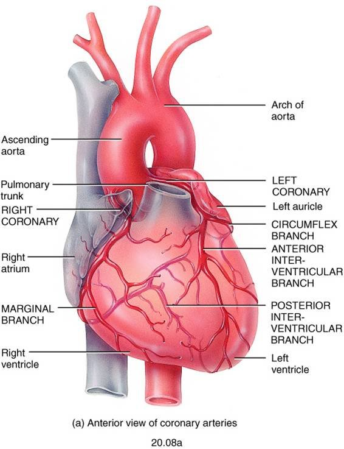
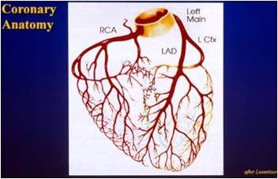
Function: what sets the heart’s oxygen demand
Slide 31 names the four determinants of workload: heart rate, preload, afterload and contractility. An increase in any one of them increases the demand for oxygen. That list is the demand half of every ischemia question (section 6.6).
The Frank–Starling law (slide 62)
The more the ventricle fills during diastole, the greater the volume it ejects in the systole that follows; in a healthy heart the end-diastolic volume will equal the stroke volume. The force any single muscle fiber generates is proportional to its initial sarcomere length (preload), and that stretch is set by the end-diastolic volume. Maximal force comes at an initial sarcomere length of 2.6 micrometers, a length rarely exceeded in the normal heart.
6.2 · Objective c — The different lipoproteins
Plaques are made of lipid, and lipid travels in the blood bound to specific proteins. Which lipoprotein carries it changes the risk (slide 12):
| Lipoprotein | Rich in | Effect on atherosclerosis risk |
|---|---|---|
| Low-density lipoprotein (LDL) | Cholesterol | Highest risk |
| Very-low-density lipoprotein (VLDL) | Triglycerides | Increases risk |
| High-density lipoprotein (HDL) | — | Decreases risk: carries cholesterol back to the liver, clearing it away from plaque |
Very low density lipoprotein versus low density lipoprotein. Very low density lipoprotein is high in triglycerides rather than cholesterol. Both raise risk, so the distinction is what each is carrying.
Familial hypercholesterolemia (slide 13) is a common single-gene form of genetic hyperlipidemia (too much fat in the blood), classically taught as the most common form. The defect is in the low-density lipoprotein receptor on liver cells, so the liver cannot remove cholesterol from the bloodstream. High-fat diets are the acquired counterpart listed on the same slide.
Lecture 7 adds a fourth name: lipoprotein(a), an altered form of low-density lipoprotein linked to coronary and cerebrovascular disease, whose risk is independent of total cholesterol (section 7.7).
6.3 · Objective d — Molecular mechanisms of common cardiopathies
The deck has no single slide for this objective; it is answered across the lecture. Every disease here reduces to one of four mechanisms:
| Where | Mechanism | Examples in this lecture |
|---|---|---|
| Coronary arteries | Oxygen supply falls below demand | Stable, variant and unstable angina; myocardial infarction |
| Valves | Extra pressure work (stenosis) or extra volume work (regurgitation) | Mitral and aortic stenosis and regurgitation; prolapse |
| Myocardium | Inflammation, dilation, hypertrophy or stiffening of the muscle itself | Myocarditis; dilated, hypertrophic, restrictive cardiomyopathy |
| Pericardium | External compression or encasement that limits filling | Effusion and tamponade; constrictive pericarditis |
Homocysteine (slide 11)
An intermediary amino acid formed in the conversion of methionine to cysteine, with primarily atherogenic and prothrombotic properties. The vascular injury it causes: intimal thickening, elastic lamina disruption, smooth muscle hypertrophy, marked platelet accumulation, and formation of a platelet-enriched occlusive thrombus.
The molecular picture of a plaque (slide 19)
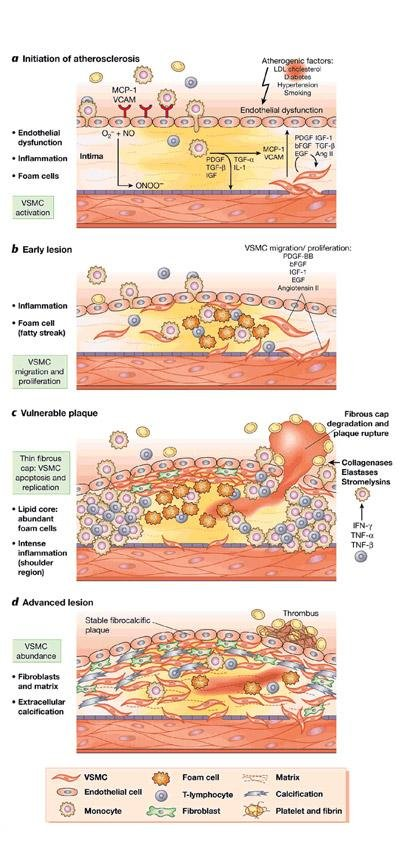
6.4 · Objective e — Etiologies and risk factors for coronary heart disease
Definition (slide 4). Coronary heart disease, also called ischemic heart disease or coronary artery disease, is the insufficient delivery of oxygenated blood to the myocardium because of atherosclerotic coronary arteries. About 50% of those who die of cardiovascular disease die of it. When the heart’s metabolic demand for oxygen exceeds the supply, the myocardium becomes ischemic; ischemia causes abnormal heart function and abnormal cardiac rhythms, and if prolonged, irreversible damage.
| Etiology (slides 8–9) | How it causes ischemia |
|---|---|
| Atherosclerosis — behind almost all coronary heart disease | Progressive narrowing of the lumen, which predisposes to the processes that precipitate ischemia: thrombosis, coronary vasospasm, endothelial cell dysfunction |
| Abnormalities of the microcirculation | Abnormal regulation of the small cardiac vessels by their endothelial cells, so control of the cardiac blood supply is abnormal |
| Uncommon: decreased oxygen content of blood | A respiratory cause; the arteries are open but the blood carries too little |
| Uncommon: poor perfusion | Hypotension or hypovolemia; too little pressure to drive flow |
Uncommon causes of coronary heart disease. Reduced oxygen content of the blood, and poor perfusion: the vessel may be open, but the blood carries too little oxygen or arrives at too low a pressure.
| Major risk factors (slide 10) | Probable risk factors |
|---|---|
| Age · family history · abnormal lipids · cigarette smoking · hypertension · diabetes mellitus · obesity | Male sex · homocysteine · high-sensitivity C-reactive protein |
6.5 · Objective f — Formation of coronary atherosclerosis and plaques
The sequence on slides 14–16, in order:
- Injury to the endothelial cells starts it — from chronic hemodynamic wall stress, toxins, inflammation or hyperlipidemia.
- The injured endothelium becomes more permeable, and leukocytes are recruited.
- Low-density lipoprotein leaks through the endothelial wall, where cells and macrophages oxidize it.
- Oxidized lipid damages both the wall and the smooth muscle cells; more macrophages arrive and keep engulfing lipid.
- Lipid-filled macrophages become foam cells. Both kinds of macrophage release inflammatory mediators and growth factor, attracting more leukocytes and stimulating smooth muscle proliferation.
- Excess lipid and debris pool inside the wall to form the lipid core.
- Plaques with large lipid cores are fragile and rupture, exposing subendothelial proteins, which starts platelet aggregation and thrombus formation; thrombotic material can be incorporated, enlarging the plaque.
- Over time collagen and fibrin form a cap, which makes the plaque more stable.
- Plaques grow over years until they begin to occlude the lumen. At 75% occlusion, blood flow is compromised.
Injured endothelium. Once it becomes more permeable, leukocytes are recruited and low density lipoprotein leaks through to be oxidized.
Compromised flow in coronary plaques. Blood flow is described as compromised at seventy-five percent occlusion; it takes a great deal of narrowing before flow suffers, so plaques grow silently for years.
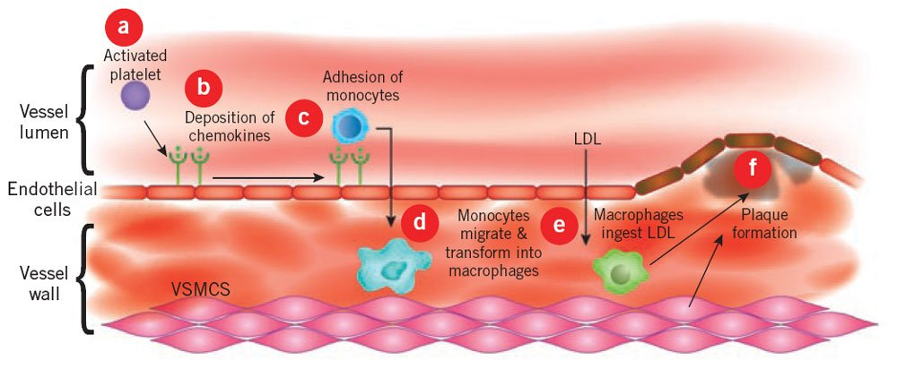
What makes a plaque rupture
Slide 16 lists what makes a plaque vulnerable to erosion or rupture: intra-plaque inflammation, a large core with a thin cap, superficial platelet aggregation, a ruptured cap, and severe stenosis. Slides 26–28 give the reasons:
- Risk depends on the composition of the plaque and the mechanical stresses on it. A vulnerable plaque has a large necrotic core under a thin fibrous cap.
- A triggering event of enough magnitude and duration compromises it — for example the shear force of blood flowing at high velocity through a severe stenosis.
- The diseased wall may be rich in vasa vasorum capillaries. Their thin walls hemorrhage, depositing blood products and building pressure inside the plaque.
The consequence (slide 29): thrombosis, and emboli carried downstream to block smaller vessels.
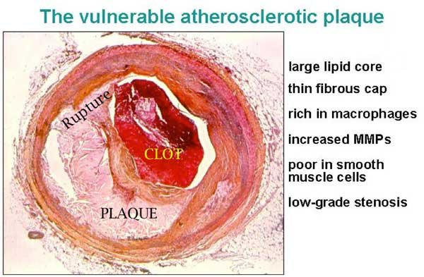
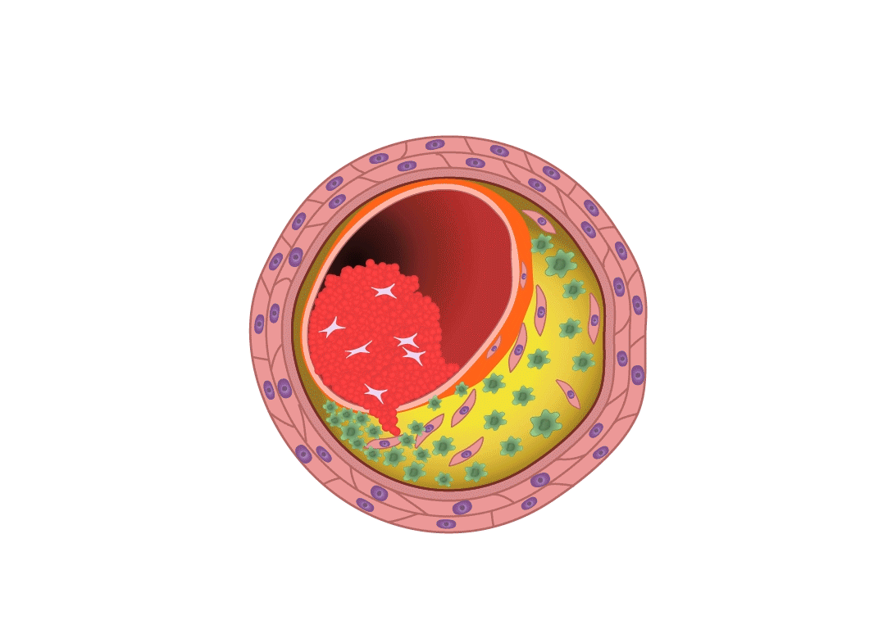
6.6 · Objective g — The pathophysiology of cardiac ischemia
Ischemia starts when oxygen supply is insufficient for the demand of the cardiac cells. With less oxygen, less ATP (adenosine triphosphate) is formed (slide 30). Every cause falls on one side of the balance:
| Supply falls: coronary perfusion impaired by | Demand rises: workload increased by |
|---|---|
| Large atherosclerotic plaques · acute platelet aggregation, then thrombosis · vasospasm · abnormal microcirculation · poor perfusion pressures | Heart rate · preload · afterload · contractility |
Reduced oxygen supply to cardiac cells. The immediate metabolic consequence is that the formation of adenosine triphosphate falls.
- When plaque builds over years, the heart develops collateral circulation to keep the muscle perfused (slide 31) — one reason a slow occlusion can be tolerated and a sudden one cannot.
- Slowly progressive plaque formation. Collateral circulation develops over the years the plaque is growing, so the heart tolerates more narrowing; abrupt occlusion in a previously healthy vessel can do more damage than a severe chronic stenosis.
- Myocardial oxygen consumption and myocardial blood flow correspond nearly linearly; metabolic signals are the principal determinants of oxygen delivery to the myocardium.
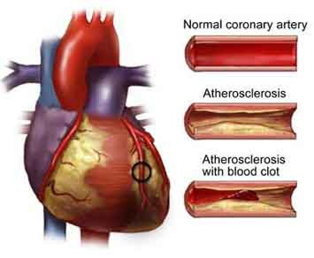
6.7 · Objective h — Coronary syndromes
Coronary syndromes are classified by the severity and onset of cardiac symptoms (slide 33):
| Chronic syndromes | Acute syndromes |
|---|---|
| Stable angina · ischemic cardiomyopathy | Unstable angina · myocardial infarction |
The dividing line is mechanism: the chronic syndromes come from a fixed narrowing that fails only when demand rises; the acute ones come from plaque rupture with acute thrombosis (section 6.9).
6.8 · Objective i — Angina pectoris
Angina is intermittent cardiac ischemia that is insufficient to kill cardiac cells. It occurs under conditions that increase the heart’s oxygen demand, and may cause insufficient pumping, leading to pulmonary congestion (slide 34).
| Type | Mechanism | Trigger |
|---|---|---|
| Stable (typical) — the most common | Stenotic atherosclerotic vessels reduce flow to a critical level | Increased cardiac workload: perfusion is adequate at rest and inadequate under load |
| Prinzmetal (variant) | Vasospasm is the probable mechanism; its cause is unknown | Unpredictable; typically happens at rest rather than with exertion (emotional stress, cold, cocaine or hyperventilation can still trigger it), even though plaques are present |
| Unstable (crescendo) | May progress to acute ischemia | Classed with the acute coronary syndromes for that reason |
6.9 · Objective j — Acute coronary syndrome
Acute coronary syndrome includes both unstable angina and myocardial infarction, because they are hard to distinguish clinically. In both, pain lasts longer than typical angina, and plaque rupture with acute thrombosis is thought to occur (slide 37).
Myocardial infarction results from prolonged or total disruption of blood flow, causing cell death by necrosis or apoptosis. The initiating feature (slide 38):
- Thrombosis on top of an ulcerated or cracked atherosclerotic plaque
- Platelets adhere to the ruptured plaque, forming a platelet plug
- The clotting cascade is activated
- A growing thrombus occludes the vessel
What the occlusion does depends on collateral circulation, workload, and length of time. A typical infarct has several zones of cells in various stages of necrosis. Complete occlusion follows a pattern (slide 39):
| Time after complete occlusion | What happens |
|---|---|
| Immediately | ATP is depleted |
| A few minutes | The muscle can no longer contract |
| After 30 minutes | Irreversible cell necrosis |
Where infarcts happen (slide 40). Nearly all are in the left ventricular walls:
| Artery occluded | Share of infarcts |
|---|---|
| Left anterior descending | 40–50% |
| Right coronary | 30–40% |
| Left circumflex | 15–20% |
Location of myocardial infarcts. Nearly all myocardial infarcts are in the left ventricular walls, and the left anterior descending is the artery most often responsible.
How the infarcted area changes (slide 40):
| Time | Gross change |
|---|---|
| First several hours | Hard to see with the naked eye (the slide puts the first visible change at about 6 hours) |
| 18–24 hours | Area becomes paler |
| Then | Yellowish and soft, with a border of red vascular connective tissue |
| 1–2 weeks | Necrotic tissue is taken away |
| By 6 weeks | Tough fibrous scar |
Evolution of an infarct. The area is pale within a day, then yellowish and soft with a red border, necrotic tissue is removed by one to two weeks, and a tough fibrous scar forms by six. The scar does not contract.
6.10 · Objective k — Valvular stenosis, regurgitation and prolapse
Valves are damaged by inflammation with scarring (mitral or aortic), calcification (mitral or aortic), or congenital defects (any valve). The altered hemodynamics raise cardiac workload, and heart failure may result (slide 42).
| Stenosis | Regurgitation (insufficiency) | |
|---|---|---|
| Definition | Failure of the valve to open completely | Inability of the valve to close completely |
| Extra work | Pressure work: blood forced through a smaller opening; a pressure gradient forms across the valve | Volume work: blood flows back across the valve and must be pumped again |
| Threshold / tempo | Hemodynamics affected at 50% closure; progresses slowly, so the heart compensates by myocardial cell hypertrophy | Acute regurgitation comes from infection or papillary muscle rupture |
| Important causes | Post-inflammatory scarring from rheumatic fever; aging valvular calcification | Important causes include rheumatic heart disease and infective endocarditis, as well as degenerative valve changes and aortic root dilation |
Hemodynamic threshold of stenosis. Stenosis begins to affect hemodynamics at about fifty percent closure, a lower threshold than the seventy-five percent that compromises coronary flow.
Slowly progressive stenosis. The heart compensates well because it hypertrophies its myocardial cells as the gradient develops, so such valves can be severely narrowed before anything is noticed.
| Lesion | Mechanism | Consequences |
|---|---|---|
| Mitral stenosis (slides 45–46) | Abnormal left atrial to left ventricular gradient during diastole: atrial pressure stays higher than ventricular pressure, and the gradient grows as the stenosis worsens | Left atrial congestion, raised left atrial pressure, raised pulmonary pressures, decreased left ventricular stroke volume. Atrial enlargement and hypertrophy → pulmonary hypertension → right-sided hypertrophy and failure. With progression: atrial fibrillation (from increased atrial volume), atrial enlargement, atrial clots |
| Mitral regurgitation (slide 48) | Backflow from ventricle to atrium during systole; a high afterload increases the regurgitation | Raised left atrial volume and pressure; the left ventricle pumps a greater volume to keep an effective stroke volume, so both atrium and ventricle dilate and hypertrophy; if severe, left-sided heart failure |
| Mitral valve prolapse (slide 49) | Ballooning of the mitral valve into the left atrium during systole | Usually no symptoms; in a few cases enough to cause some mitral regurgitation |
| Aortic stenosis (slides 50–51) | Most commonly age-related calcification, common with a bicuspid aortic valve; rheumatic disease is an uncommon cause, and it usually shows up years after the original rheumatic fever. Obstruction to outflow during systole creates a left ventricular to aortic gradient | The ventricle generates high systolic pressures and slowly hypertrophies; hypertrophy plus high pressure predispose to ischemia and angina; may lead to left heart failure |
| Aortic regurgitation (slide 53) | Incompetent valve leaks from aorta back into the left ventricle during diastole; causes similar to mitral regurgitation, with aortic root dilation (from aging or connective tissue disease) a common one | Left ventricle hypertrophies and dilates; the aortic diastolic pressure falls because blood leaks back into the ventricle; high workload can lead to left-sided heart failure |
Atrial fibrillation in mitral stenosis. The atrium enlarges as its volume rises, and the enlarged fibrillating atrium then predisposes to clot within it.
Mitral stenosis and stroke volume. Left ventricular stroke volume decreases; the ventricle is not diseased, it is simply not being filled, so the problem is upstream of it.
Afterload in mitral regurgitation. High afterload increases the amount of blood regurgitated: the ventricle takes the path of least resistance, so the harder it is to eject forwards, the more goes backwards.
Aortic stenosis. It predisposes to ischemia and angina because hypertrophy and high ventricular pressures raise demand beyond what supply can meet; angina can arise with entirely normal coronary arteries.
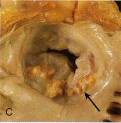
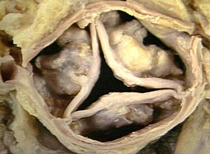
6.11 · Objective l — Infective cardiopathies
| Condition | Mechanism |
|---|---|
| Rheumatic heart disease (slides 54–55) | An uncommon but serious consequence of rheumatic fever, the acute inflammatory disease that follows infection with group A beta-hemolytic streptococcus. The damage is an immune attack caused by cross-reactivity, not the organism itself, with a genetic predisposition seen in certain HLA (human leukocyte antigen) types. The inflammation involves all layers of the heart (carditis). In the endocardium: valvular swelling, erosions, platelet aggregation and fibrin on the leaflets, and with progression scarring and shortening of the valve structures. |
| Infective endocarditis (slide 56) | Invasion and colonization of endocardial structures by pathogens, causing inflammation. Invasion of the bloodstream is a prerequisite. Vegetations form — microorganisms enmeshed in fibrin — which grow large, interfere with valve function and predispose to emboli. Most common organisms: Streptococcus strains and Staphylococcus aureus. |
| Subacute infective endocarditis (slide 57) | Insidious onset in people with a preexisting valve pathology. The organisms are less virulent (typically Streptococcus) and are not virulent enough to attack a healthy endocardium; the damaged valve is what lets them in. The slide also lists S. aureus and Candida; S. aureus belongs with the acute form (see the note below). |
| Myocarditis (slide 59) | Etiologies include microbes (most often viruses, classically Coxsackievirus), immune-related disease and physical agents. The slide calls Coxsackievirus the most common cause in North America, but biopsy series now find other viruses about as often. Mechanism in section 6.14. |
| Acute pericarditis (slide 70) | Most cases are idiopathic, and most of those are viral; the inflammation damages the pericardium. Section 6.14. |
Vegetation. Microorganisms enmeshed in fibrin deposits; as they enlarge they interfere with valve function and predispose to embolism.
6.12 · Objective m — Blood pressure regulation
No slide in the Cardiac deck teaches this objective. Lecture 7 does, on slides 19–21: blood pressure is set by cardiac output and vascular resistance, resistance is regulated at the arterioles, and a fall in pressure triggers the renin–angiotensin–aldosterone response. The full treatment is in section 7.5.
Where pressure appears in this deck, it is as load on the heart: afterload is one of the four determinants of oxygen demand (slide 31); a high afterload increases mitral regurgitation (slide 48); in aortic regurgitation the aortic diastolic pressure falls (slide 53); and poor perfusion pressure is one cause of ischemia (slide 30).
6.13 · Objective n — The cardiac conduction system
No slide in the deck covers the conduction system. The deck mentions rhythm in only two places:
- Ischemia can lead to abnormal cardiac rhythms as well as abnormal heart function (slide 4).
- Mitral stenosis leads, with progression, to atrial fibrillation due to the increased atrial volume (slide 46).
Nothing further is added here, so that nothing on this page goes beyond the deck. If the objective was covered aloud, those notes are the source.
6.14 · Objective o — Structural cardiac pathologies
Myocarditis (slides 59–60)
Characterized by inflammation, leukocyte infiltration and necrosis of the myocardium. The picture: left ventricular dysfunction, sometimes dilation of the chambers (the slide says all four; acute disease often has a normal-sized or only mildly dilated heart), patchy or diffuse necrotic lesions, inflamed and edematous muscle with leukocyte infiltrates, and endocardial structures that are usually normal.
Cardiomyopathy (slides 61–65)
Some have known causes. Those of unknown cause are grouped by their major pathophysiological feature:
| Type | What the muscle does | Why the heart fails |
|---|---|---|
| Dilated (also called congested) | Dilation of one or both ventricles | Cardiac failure with dilation. Factors: alcohol, genetics, pregnancy, post-viral |
| Hypertrophic | A thickened, hyperkinetic ventricular muscle mass | Symptoms from ventricular outflow obstruction and impaired diastolic filling |
| Restrictive | A stiff, fibrotic, rigid, noncompliant ventricle; most related to a specific condition, for example amyloidosis | Restricted diastolic filling → low stroke volume → heart failure |
Dilated cardiomyopathy. Associated factors are alcohol, genetics, pregnancy and a post-viral state.
Pericardial disease (slides 66–72)
Rarely primary; usually secondary to another cause. Whatever the cause, fluid accumulates in the pericardial sac (the sac around the heart), and when the cause is inflammatory the pericardial structures can become painfully inflamed.
| Pericardial effusion type | What it is and why |
|---|---|
| Serous | A transudate, secondary to heart failure or hypoproteinemia |
| Serosanguinous | Serous fluid plus blood, after blunt chest trauma, heart surgery or cardiopulmonary resuscitation |
| Chylous | Lymph, from obstruction to lymph drainage |
| Blood (hemopericardium) | Penetrating cardiac trauma |
An effusion is simply a collection of fluid; it is often non-inflammatory, watery fluid, but it can also be an inflammatory exudate when infection or inflammation is the cause. Cardiac tamponade is what happens when pericardial fluid, especially if it collects quickly, compresses the heart chambers from outside so that filling is impaired; it is life-threatening (slide 69).
| Pericarditis | Mechanism |
|---|---|
| Acute | Mostly idiopathic, most of those viral; the inflammation damages the pericardium |
| Chronic (healed) | Healing of an acute form leaves chronic dysfunction; two principal types below |
| Adhesive mediastinopericarditis | Follows suppurative or caseous pericarditis, or surgery. The sac is destroyed and the heart adheres to the surrounding mediastinal structures, so every beat pulls against them and workload rises |
| Constrictive pericarditis | Many causes unknown; can share the adhesive form’s causes. The sac becomes dense, nonelastic, fibrous and scarred, and encases the heart like a stiff cage, impairing diastolic filling |
Cardiac tamponade. Tamponade is external compression of the chambers by pericardial fluid, which prevents filling, so the muscle and valves may be entirely normal while output collapses.
7 · Vascular Pathophysiology
Lecture 7 · 15 September 2026 · deck title slide: “Presented by Stacie Gopal, DMS, PA-C”, “Adapted from Lauren Reynolds, PA-C”. The calendar row names Professor Reynolds; the deck’s own wording is used here.
Instructional Objectives
- Review the anatomy of the vascular system
- Review the functions of the components of the vascular system
- Describe the molecular mechanisms of common vascular pathologies
7.0 · What the recording adds
The 51-minute recording was read in two independent transcriptions and cross-examined. Both agree on everything below. Timestamps are minutes into the recording.
| Said | What it means for the exam |
|---|---|
| “Do know that a consequence of atherosclerosis is peripheral arterial disease… an individual might experience claudication… because there’s a lack of oxygenated blood supply to that musculature under increased demand.” [33:43] | The one explicit “do know” in the lecture. The mechanism: stenosis → ischemia that shows only when demand rises, exactly like stable angina in section 6.8. |
| “Notice the size of the arteries, because much of what we’re going to be discussing today involves the large versus medium versus small.” [1:51]; “the take home point is that it affects different vessels based on their size and physiologic purpose.” [43:21] | The organizing principle of the whole lecture: large elastic arteries → aneurysm; medium muscular arteries → atherosclerosis; small arteries and arterioles → hypertension (section 7.4). |
| “Principal mechanisms of vascular disease, it’s kind of easy, it’s two things. It’s either narrowing of the vessel… or weakening of the vessel, which would be dilation and rupture.” [22:08] | Sort every disease in this lecture into one of the two bins. |
| “An aneurysm means a weakening of the wall, it does not mean a rupture of the wall.” [38:55] | Answering a student’s question: not all aneurysms rupture; the risk depends on size (section 7.8). |
| “You are held responsible for the textbook information too.” [21:59]; “If there’s any discrepancy… the textbook is going to be the rule to prevail… but I won’t put any trick questions on the test trying to compare these two, I promise.” [33:27] | Said of the overlap with the Cardiac lecture on atherosclerosis. She pointed at the textbook’s Figure 11.3 (the neointimal response) and its Key Concepts box (section 7.3). |
- Vasculitis: “more than 20 forms… I just threw out a couple of examples there, but again this is not something we can dive into in tremendous detail today.” [43:15, 44:38]
- Mycotic aneurysm: “These are very rare, but it’s there for the sake of completeness.” [42:08]
- Atherosclerosis was presented as a quick review, “because I know it was covered yesterday” [30:11]. Section 6.5 is the full version.
7.1 · Objective a — Anatomy of the vascular system
The vascular system is a closed network of blood and lymph vessels. On the slide 3 overview, the numbered structures are 1 aorta, 2 pulmonary artery, 3 right heart, 4 left heart, 6 abdominal aorta (there is no 5). Slides 4 and 7 show the named arteries and veins, superficial and deep veins, and the hepatic portal system, where veins from the stomach and intestines enter the liver so that nutrients are processed and drugs metabolized on first pass.
From heart and back: the five components (slides 8–9)
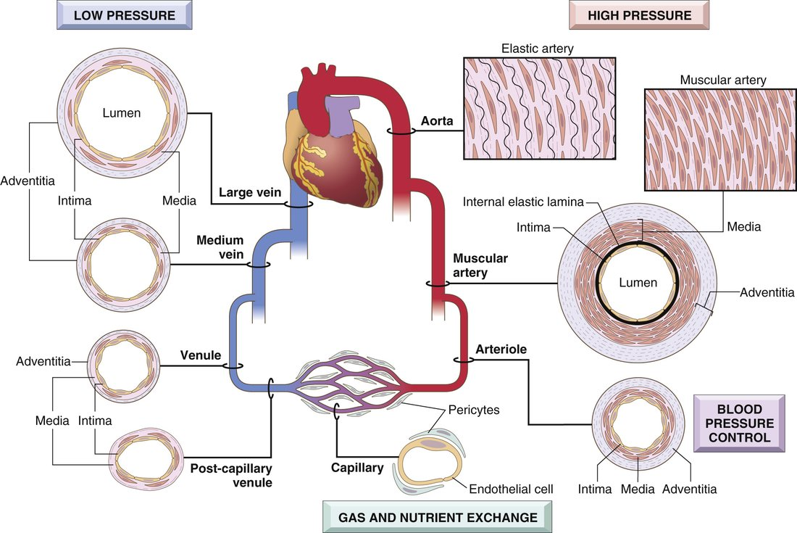
The three layers (slide 10)
| Layer | Structure |
|---|---|
| Intima | A single layer of endothelial cells on a basement membrane, with a thin underlying layer of extracellular matrix |
| Media | In elastic arteries such as the aorta, lamellar units of elastin fibers and smooth muscle cells arranged like tree rings, which expand during systole and recoil during diastole |
| Adventitia | Loose connective tissue for support; can carry nerve fibers; in large vessels it holds their own small arterioles (vasa vasorum) that perfuse the adventitia and part of the media |
All three layers are present in arteries and veins, though more clearly demarcated in the thicker arterial wall. The amount of smooth muscle and matrix in the media varies with the hemodynamic demand of the vessel’s location. Capillaries are the exception: they have no media.
Capillaries (slide 11)
A capillary is equal to or slightly smaller than the diameter of a red blood cell — in the lecture, roughly 5–10 micrometers against a red cell of 7–8. The lumen is lined with endothelium and has no media. Capillaries have a large cross-sectional area and a low flow rate; thin walls plus slow flow make exchange easy. Tissues with high metabolic rates, myocardium and brain, have the highest capillary density.
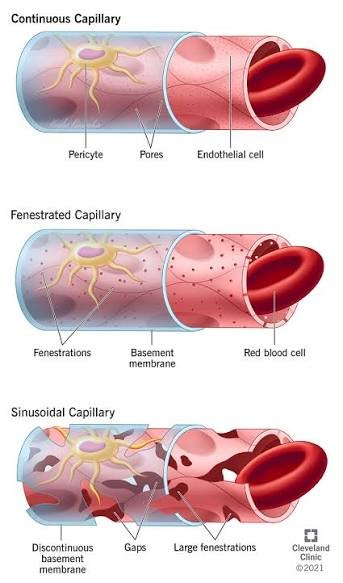
Capillary diameter. Equal to or even slightly smaller than a red blood cell, so red cells must deform to pass, bringing their membranes into close contact with the endothelium.
7.2 · Objective b — Functions of the components of the vascular system
| Function of the vascular system (slide 5) | |
|---|---|
| Nutrients | Transported to tissues |
| Waste products | Transported away from tissues |
| Hormones | Transported from one part of the body to another |
| Homeostasis | Balance in all tissue fluids, for the function of cells |
Two circulatory loops (slide 6). Pulmonary: deoxygenated blood from the right heart to the lungs. Systemic: oxygenated blood from the left heart to the tissues, returning deoxygenated blood to the right heart. The naming rule she stopped on: an artery carries blood away from the heart and a vein toward it, which is why the pulmonary artery carries deoxygenated blood and the pulmonary vein oxygenated.
| Component (slide 8) | Function |
|---|---|
| 1 · Arteries | High pressure, strong walls, high-velocity flow |
| 2 · Arterioles | Control conduits for the release of blood into the capillaries — the principal points of resistance to flow (“small but mighty”) |
| 3 · Capillaries | Exchange of fluid, nutrients, electrolytes, hormones and wastes between blood and tissue |
| 4 · Venules | Collect blood from capillaries and coalesce into larger veins |
| 5 · Veins | Return blood to the heart; major reservoir of extra blood; low pressure, thin walls |
Arteries. High pressure, strong walls, high flow velocity; veins, by contrast, are low pressure with thin walls and serve as the major reservoir of extra blood.
Veins hold about 66% of the total blood volume (slide 35), so maintaining that volume is a large part of maintaining blood pressure.
7.3 · Objective c — The healthy wall and its response to injury
| Cell (slide 12) | What it does in health |
|---|---|
| Endothelial cells — specialized simple squamous epithelium lining the lumen | Vessel homeostasis; a nonthrombogenic surface that keeps blood fluid; modulates medial smooth muscle tone and so vascular resistance; metabolizes hormones such as angiotensin; regulates inflammation; affects the growth of other cells, particularly smooth muscle |
| Smooth muscle cells — the predominant cell of the media | Normal vascular repair, and a large part in atherosclerosis: they proliferate when stimulated, synthesize collagen, elastin, proteoglycans, growth factors and cytokines, and are responsible for vasoconstriction and vasodilation |
Nonthrombogenic endothelial surface. It keeps blood in a fluid state; this is an active property, and endothelial injury lets platelets adhere and a thrombus begin.
Intimal thickening (slides 13–15)
Vascular injury with endothelial dysfunction or loss stimulates smooth muscle cell recruitment and proliferation into the intima:
- Endothelial cells migrate in from uninjured areas or come from precursor cells in the blood — and nitric oxide production falls.
- Smooth muscle cells (or circulating precursors) migrate into the intima, proliferate and synthesize extracellular matrix — the primary pathology of neointimal hyperplasia.
- Platelets activate (a thrombus forms) and leukocytes are recruited (the inflammatory cascade begins).
- Neointimal response. Platelet activation and leukocyte recruitment accompany it: a thrombus forms and the inflammatory cascade begins at the injury site.
The result is a thickened intima that narrows the lumen and compromises flow. This neointimal response happens with any form of vascular damage, regardless of cause, and involves wall remodeling and loss of lumen patency.
Endothelial repair and nitric oxide. Nitric oxide production decreases; because nitric oxide is a vasodilator and an inhibitor of platelet adhesion, losing it shifts the vessel toward constriction and thrombosis.
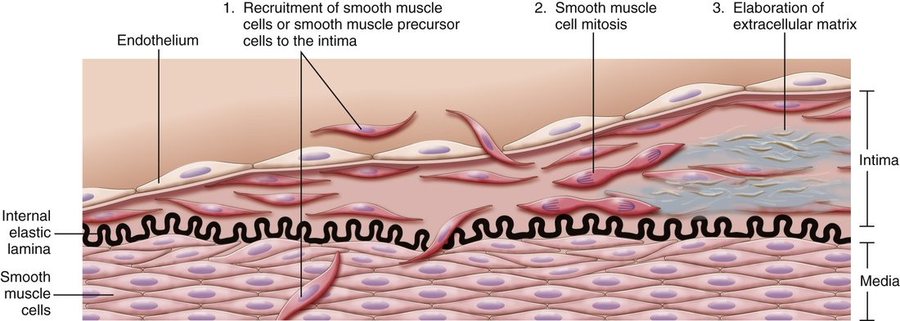
Key Concepts, response of vascular wall cells to injury (slide 15, an image of the textbook’s box; transcribed here because the deck has no text copy):
- All vessels are lined by endothelium; endothelial cells in specific vascular beds have special features for tissue-specific functions (for example, fenestrated endothelium in renal glomeruli).
- Endothelial function is tightly regulated. Stimuli can shift the phenotype: procoagulant versus anticoagulant, proinflammatory versus anti-inflammatory, adhesive versus nonadhesive.
- Injury of almost any type to the wall produces a stereotyped healing response: smooth muscle proliferation, matrix deposition, and intimal expansion.
- Smooth muscle recruitment is signaled by endothelial cells, platelets and macrophages, and by mediators from the coagulation and complement cascades.
- Excessive intimal thickening can cause luminal stenosis and vascular obstruction.
7.4 · Objective c — Two mechanisms, three sizes of artery
The principal mechanisms of vascular disease (slide 16): narrowing — stenosis or obstruction of the lumen, either progressive (atherosclerosis) or precipitous (thrombosis, embolism) — and weakening, which leads to dilation or rupture. Each vessel type has its own structure for its own physiologic needs, so each size of artery tends to be tied to one typical pattern of disease (slide 17; the patterns overlap, for example atherosclerosis also affects the aorta):
| Artery type (slide 18) | Examples | Typical disease and why |
|---|---|---|
| Large (elastic) — aorta about 2–3.5 cm | Aorta and its major branches, such as the iliac arteries | Aneurysm: weakening from loss of elastic tissue |
| Medium (muscular) — coronary arteries 3–4 mm | Smaller aortic branches: coronary and renal arteries | Atherosclerosis: narrowing by intimal thickening, in arteries built with elastic and muscular components to withstand high pulsatile force and recoil |
| Small arteries (2 mm or less) and arterioles (20–100 micrometers) | Within tissues and organs | Hypertension: mechanical stress, endothelial dysfunction, less elasticity and weakening, while the lumen stiffens and narrows |
Four principal mechanisms of vascular disease. Weakening, narrowing, dilation and rupture. Narrowing itself can be progressive, as in atherosclerosis, or precipitous, as in thrombosis or embolism.
Narrowing of a vessel lumen. Narrowing can arise progressively or precipitously. Atherosclerosis narrows progressively; thrombosis or embolism narrows precipitously. A gradual stenosis allows collateral supply to develop while a sudden one does not.
7.5 · Objective c — Blood pressure regulation and hypertension
Blood pressure is determined by vascular resistance and cardiac output (slide 19):
- Vascular resistance is regulated at the arterioles, by neural and hormonal input, as a balance of vasoconstrictors (such as angiotensin) and vasodilators (such as nitric oxide).
- Cardiac output is heart rate times stroke volume, and stroke volume depends on blood volume, which is regulated by sodium excretion or resorption. Water follows sodium: more sodium in the blood pulls in water, raising volume and so pressure — one reason chronic high sodium intake contributes to hypertension.
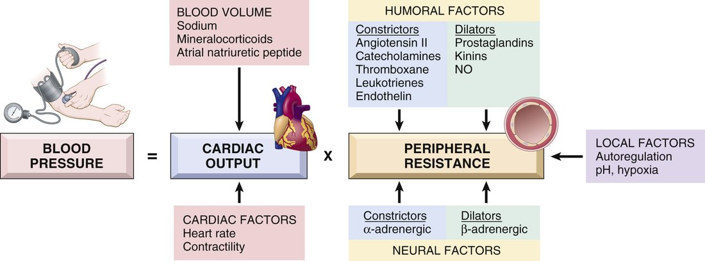
When pressure falls: the renin–angiotensin–aldosterone response
- The kidneys secrete renin in response to decreased pressure in the afferent arterioles.
- Renin cleaves angiotensinogen to angiotensin I.
- Endothelial catabolism produces angiotensin II, a vasoconstrictor.
- Angiotensin II raises pressure by increasing smooth muscle tone and adrenal aldosterone secretion, which increases renal sodium resorption.
When pressure is high: hypertension (slide 20)
A common disorder and a risk factor for atherosclerosis, congestive heart failure, renal failure, cerebral hemorrhage and aortic dissection.
| Essential hypertension | Secondary hypertension | |
|---|---|---|
| Share | 90–95%, idiopathic | Much less common |
| Mechanism | Genetic plus environmental factors; suspected small changes in renal sodium homeostasis and/or vessel wall tone and structure. Insufficient renal sodium excretion at normal arterial pressure → more fluid volume → more cardiac output → more vasoconstriction → raised pressure | Renovascular: renal artery stenosis lowers glomerular flow and afferent arteriolar pressure, which induces renin secretion and raises volume and tone. Primary hyperaldosteronism is a common cause (in the lecture, for example from an adrenal adenoma) |
7.6 · Objective c — Arteriosclerosis
Literally “hardening of the arteries”: the generic term for arterial wall thickening and loss of elasticity. Four patterns (slide 22):
| Pattern | Mechanism and features |
|---|---|
| Arteriolosclerosis of small arteries and arterioles | Can cause downstream ischemic injury. Two subtypes, both related to hypertension: hyaline and hyperplastic |
| Fibromuscular intimal hyperplasia | In muscular arteries larger than arterioles, driven by inflammation or mechanical injury; a healing response. Vessels can become very stenotic — for example in-stent restenosis — and it is a major long-term limitation of solid-organ transplants |
| Mönckeberg medial sclerosis | Calcification of the media of muscular arteries; usually not clinically significant (in the lecture, adults over 50) |
| Atherosclerosis | Greek for “gruel” and “hardening”; the most clinically relevant form (section 7.7) |
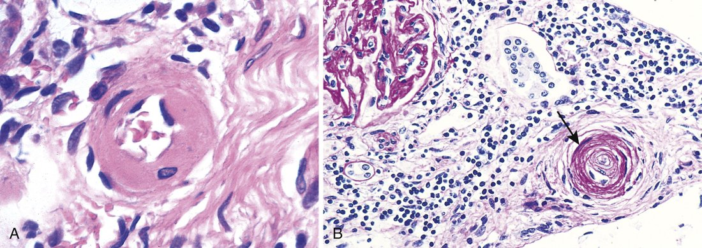
7.7 · Objective c — Atherosclerosis, from the vessel wall
The major pathogenesis of coronary, cerebral and peripheral vascular disease, and the cause of more morbidity and mortality in the Western world than any other disorder — slide 24 says about half of all deaths, an older figure; cardiovascular disease accounts for roughly a third of deaths in the United States today. Risk comes from acquired, inherited, sex- and age-related factors:
| Risk factor (slide 24) | What the lecture adds |
|---|---|
| Hyperlipidemia | — |
| Lipoprotein(a) | An altered form of low-density lipoprotein; risk independent of total cholesterol |
| Smoking · hypertension · diabetes mellitus | — |
| Metabolic syndrome | Central obesity, insulin resistance, hypertension, dyslipidemia; induces a hypercoagulable and proinflammatory state |
| Inflammation (C-reactive protein) | Now included in cardiovascular risk stratification |
| Genetics | Family history is a strong risk factor, classically taught (on the slide) as the most important one |
| Increasing age | Progressive; manifests in the 40s to 60s and rises by decade |
| Men and postmenopausal women | Likely a protective effect of estrogen |
The sequence (slide 25). A chronic inflammatory and healing response of the arterial wall to endothelial injury:
- Healthy vessel is injured (think risk factors)
- Low-density lipoprotein accumulates in the wall
- Monocytes adhere to the endothelium
- Platelets adhere
- Smooth muscle cells are recruited, by factors released from activated platelets and macrophages
- Smooth muscle proliferates, extracellular matrix is produced, T cells are recruited
- Lipid accumulates
- Matrix and necrotic debris calcify
End of the atherosclerotic sequence. The final two steps are lipid accumulation, then calcification, which involves matrix and necrotic debris.
Peripheral arterial disease is the consequence she told the class to know: the arteries become stenotic, which causes ischemia; with increased metabolic demand (walking) the patient has claudication, from lack of oxygenated blood to the working muscle (slide 25, [33:43]).
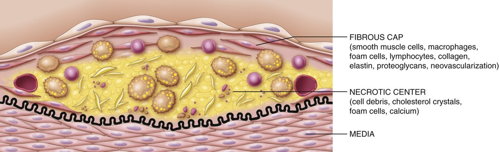
7.8 · Objective c — Aneurysms and dissection
An aneurysm is a localized abnormal dilation of a vessel, congenital or acquired, classified by shape. A dissection is blood entering a defect in the arterial wall and tunneling through the medial or medial-adventitial planes (slide 27).
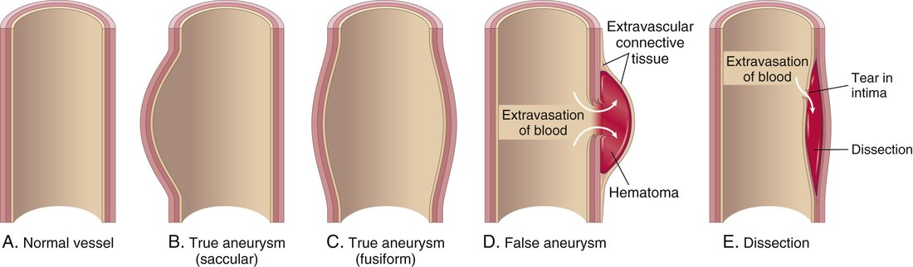
Dissection. Blood enters a wall defect and tunnels through medial (or medial-adventitial) planes, so the wall is split into layers rather than merely dilated.
Pathogenesis (slide 28). Arterial walls constantly remodel; anything that compromises the connective tissue of the wall can produce aneurysm or dissection:
| Route to a weak wall | Examples |
|---|---|
| Poor connective tissue quality | Defective collagen synthesis; abnormal transforming growth factor signaling (Marfan syndrome) |
| Imbalance of collagen degradation and synthesis | Altered by inflammation and proteases; a genetic predisposition in the setting of inflammatory lesions |
| Loss of smooth muscle cells or inappropriate matrix synthesis | Ischemia, hypertension, tertiary syphilis |
Wall basis of aneurysm and dissection. Compromised wall connective tissue, in either structure or function, underlies both lesions, because arterial walls are constantly remodelling; histopathological change follows.
Predisposing conditions for aortic aneurysm: atherosclerosis, hypertension, smoking.
| Aortic lesion (slide 29) | Mechanism and association |
|---|---|
| Abdominal aortic aneurysm | Atherosclerotic aneurysms occur most commonly in the abdominal aorta and common iliac arteries. Rupture risk rises with size: in the lecture, under 4 cm they typically do not rupture and over 5.5 cm the risk is very high |
| Thoracic aortic aneurysm | Commonly associated with hypertension; also Marfan syndrome and inflammation (and, in the lecture, a bicuspid aortic valve, which raises local hemodynamic stress) |
| Aortic dissection | The laminar planes of the media split to form a blood-filled channel in the wall. Hypertension is the major risk factor. In the lecture: two groups, ages 40–60 with hypertension, or younger patients with connective tissue disorders such as Marfan; also a sudden pressure spike (cocaine) or iatrogenic injury during catheterization |
| Cerebral aneurysm (slide 30) | Features |
|---|---|
| Saccular (berry) | Thin-walled protrusions with very thin or absent media and absent or fragmented internal elastic lamina; typically acquired. Multifactorial: hemodynamic stress, turbulent flow causing structural fatigue, hypertension, smoking, connective tissue disease, possibly inflammation. Lack of elastic lamina is the main feature. |
| Fusiform | Dilation of the entire circumference; atherosclerosis may be a factor |
| Mycotic | Usually from infected emboli in infective endocarditis (rare; see section 6.11) |
7.9 · Objective c — Fibromuscular dysplasia, vasculitis, Raynaud phenomenon, arteriovenous fistula
Fibromuscular dysplasia (slide 31)
A focal irregular thickening of medium and large muscular arteries, exact cause unknown. Segments of wall are thickened by hyperplasia and fibrosis of the media and intima, causing luminal stenosis. Example: the renal arteries (in the lecture also carotid and vertebral; in the renal arteries it can cause renovascular hypertension). The angiographic sign is a “string of beads”, and it may lead to aneurysmal dilation that can rupture.
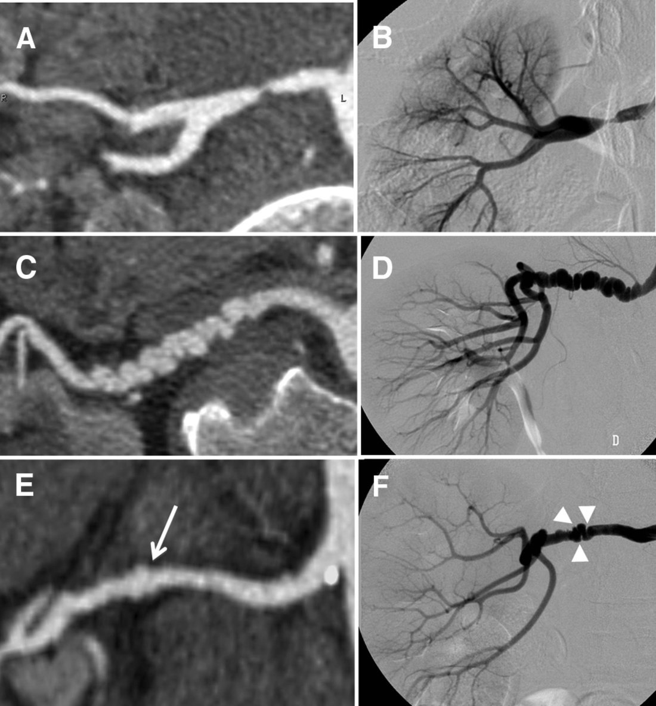
Vasculitis (slide 32)
Vessel wall inflammation, with manifestations set by the vessel affected; any organ or vessel, but mostly small vessels. About 20 primary forms. Two main pathogenic mechanisms: immune-mediated inflammation, and direct invasion of the wall by infectious pathogens.
| Vessel size | Examples on the slide |
|---|---|
| Large | Giant cell arteritis (in the lecture: carotid, vertebral and temporal arteries; granulomatous inflammation) |
| Medium | Polyarteritis nodosa; Kawasaki disease (in the lecture: an acute febrile illness of children under 5) |
| Small | Two subgroups: ANCA (anti-neutrophil cytoplasmic antibody)-associated necrotizing vasculitis; immune complex vasculitis, as in systemic lupus erythematosus and rheumatoid arthritis |
Raynaud phenomenon (slide 33)
An exaggerated vasoconstrictive response to cold and emotional stress, mostly in the arteries and arterioles of the extremities. Vasoconstriction → tissue anoxia → return of oxygenated blood produces the color sequence white → blue → red. In the lecture: white from constriction, blue from lack of oxygen, red when flow returns, which is painful because of rapid vessel dilation and a rush of inflammatory signals.
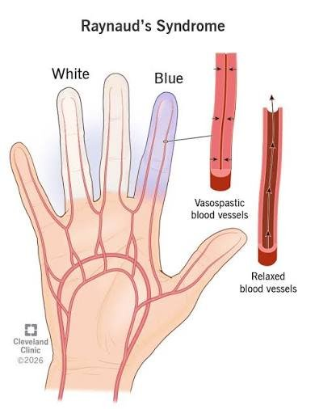
Arteriovenous fistula (slide 34)
An irregular direct connection between an artery and a vein, bypassing the capillaries. Causes: developmental defects; rupture of an arterial aneurysm into an adjacent vein; penetrating injury that pierces artery and vein; inflammatory necrosis of adjacent vessels; or surgical creation for hemodialysis access, to carry high flow at a rapid rate. In the lecture: the vein then remodels until its wall can withstand arterial pressure.
7.10 · Objective c — Veins: varicosities and deep vein thrombosis
Veins have larger diameters and lumens than arteries and hold about 66% of total blood volume. Their thinner media allows greater capacitance, and venous valves prevent gravitational reverse flow. As with arteries, location and structure predict the disease (slide 35):
| Veins | Examples | Typical disease |
|---|---|---|
| Superficial | Great and small saphenous | Varicose veins, from insufficiency of the venous valves; usually the lower extremities (flow against gravity), also pelvis and rectum (hemorrhoids) |
| Deep | Femoral, popliteal, tibial | Stasis in a dilated vein → thrombosis (deep vein thrombosis) |
Varicosities (slide 36). Varicose veins are dilated, tortuous veins caused by chronic high intraluminal pressure and weakened wall support. Esophageal varices are dilated submucosal distal esophageal veins from cirrhosis and portal venous hypertension. Hemorrhoids are varicose dilations of the venous plexus at the anorectal junction. In the lecture, varicose veins and hemorrhoids were both linked to pregnancy.
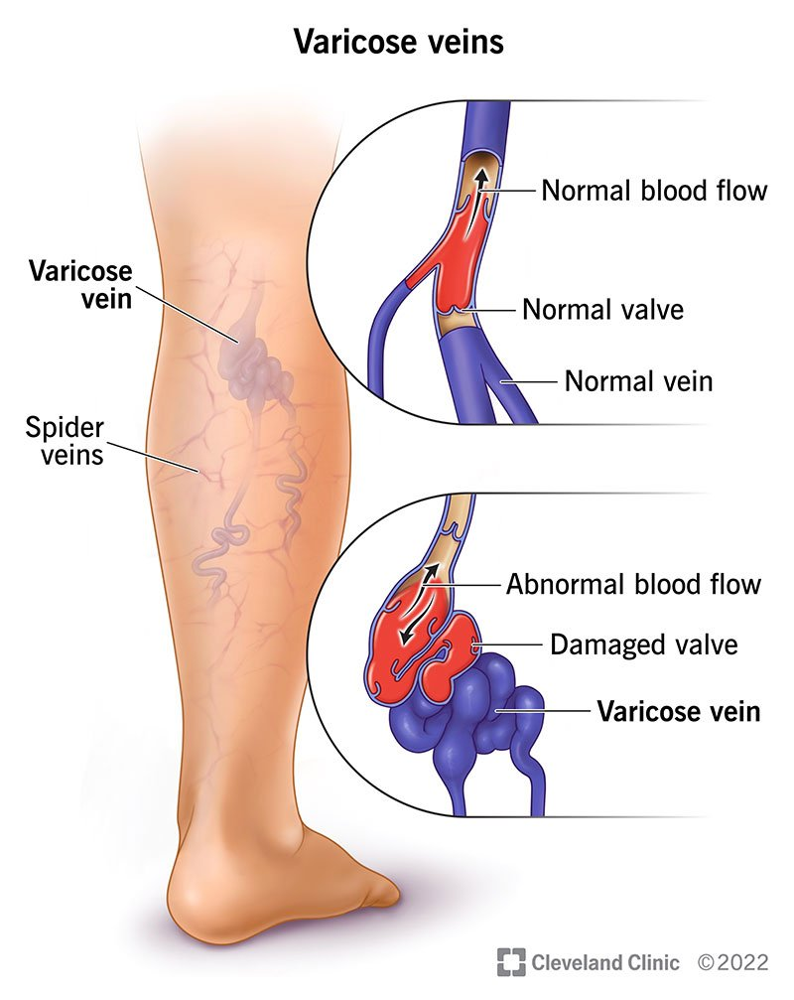
Deep vein thrombosis (slides 37–38)
A clot in a deep vein, typically of the legs; the third most common cause of death from cardiovascular disease.
| Risk factor (slide 37) | Examples |
|---|---|
| Reduced blood flow | Immobility (in the lecture: bed rest, general anesthesia, the postoperative state, stroke, a long flight) |
| Increased venous pressure | Mechanical compression or functional impairment |
| Mechanical injury | Trauma, surgery, intravenous drug use, iatrogenic |
| Increased blood viscosity | Dehydration, thrombocytosis |
| Anatomic variations | — |
| Increased coagulation (genetic or acquired) | Cancer, sepsis, systemic lupus erythematosus, oral estrogen |
Virchow triad (slide 38): (1) damage to the vessel wall, (2) abnormal blood flow, meaning turbulence or stasis (pooling), (3) hypercoagulability (blood that clots too easily). The slide names turbulence; stasis, as in deep vein thrombosis, counts as well. Triggers are multifactorial, with the three involved in varying degrees.
What happens to the clot. Over weeks, neutrophils and macrophages infiltrate the fibrin clot, and collagen gradually replaces the fibrin; that remodeling and fibrosis decrease blood flow. If the thrombus dislodges it becomes an embolus that travels through the venous system to the pulmonary artery, occluding it: a pulmonary embolus.
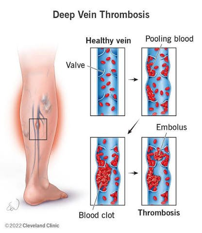
8 · Immunity
Lecture 8 · 19 October 2026 · a narrated deck (one recorded clip per slide) by Matthew Ward, DMSc, MBA, PA-C (deck title slide: “Lectured Prepared by: Matthew Ward, DMSc, MBA, PA-C”).
Instructional Objectives
- Describe the molecular mechanisms involved in immune processes
- Compare and contrast the various types of immunological processes
- Compare and contrast acquired and innate immunity
- Compare and contrast natural and artificial immunity
- Compare and contrast the various types of blood cells and their roles in immunity
- Define the function and specific types of antigens
- Describe the antigens’ ability to promote an immune response
- Compare and contrast primary and secondary immune response by the body
- Describe B lymphocyte and its metamorphosis into plasma cells
- Define antibodies (immunoglobulins)
- Compare and contrast the morphology of the various types of antibodies
- Compare and contrast the functions of the various types of antibodies and the various mechanisms by which antibodies destroy antigens
- Describe the process known as cellular immunity
- Describe T-lymphocytes
- Compare and contrast the various subtypes and various functions of T lymphocytes
- Compare and contrast the various mechanisms that T lymphocytes destroy antigens
- Define the concept of hypersensitivity
- Compare and contrast the types of hypersensitivity reactions
- Describe the function of the complement system
- Define autoimmunity
- Compare and contrast examples of autoimmune diseases
- Compare and contrast primary and secondary immunodeficiency including the genetic basis
- Describe the effect of aging on the immune system
8.0 · What the narration adds
Every slide carries its own recorded narration (118 minutes in all, transcribed slide by slide). There was no second recording to cross-check against. The narration sets two things here: which topics get the most questions (by the minutes spent on each slide) and the stars below. Every fact in this section comes from the slides themselves.
| Where the minutes went | Min |
|---|---|
| Blood cells in immunity (slides 14–21) | 16.2 |
| Antibody functions, agglutination to opsonization (slides 47–59) | 14.4 |
| Hypersensitivity (slides 60–65) | 12.2 |
| Complement (slides 66–75) | 11.2 |
| T cells and cellular immunity (slides 24–25, 30–34) | 10.9 |
| Antibody classes (slides 44–46; slide 44 alone was 4.3 minutes, the longest slide) | 7.9 |
| Antibody structure (slides 39–43) | 7.6 |
| Immunodeficiency and aging (slides 76–77) | 6.7 |
| Said | What it points at |
|---|---|
| “To help remember CD4 versus CD8, CD4, there’s four letters in help. So CD4 is our helper cells and cytotoxic would then be CD8.” (slide 25); “When you mentioned CD4, think helper T cells.” (slide 30) | The CD4 helper / CD8 cytotoxic split, and which presenting molecule each reads (section 8.9). |
| “The thymus starts with a T, so think T cells, thymus.” (slide 19); “Baso B blood and mast cells are in tissue.” (slide 15) | Two memory hooks for section 8.3. |
| “So secondary response is usually faster, larger, quicker response than primary… IgM is primary and usually the first one. And IgG commonly dominates the systemic secondary response.” (slide 36) | Section 8.5 and the graph on slide 37. |
| “So IgG is how maternal immunity is passed to babies in the womb.” (slide 44) | IgG crosses the placenta: natural passive immunity (sections 8.2 and 8.7). |
| “If you’re measuring immunoglobulin levels and there’s a high IgM present, what does that suggest? This is the first time that that person’s ever been exposed to that illness. Whereas if IgM is low and IgG is high, it could suggest that they’ve already been exposed prior.” (slide 46) | Reading the primary/secondary pattern from the classes (section 8.5). |
| “It also makes sense why O is the universal donor.” (slide 49) | Group O red cells carry neither A nor B antigen (section 8.8). |
| “Just keep in mind, neutralization does not mean necessarily the particle is being destroyed.” (slide 52) | Neutralization blocks without destroying (section 8.8). |
| “They’re organized by the immune mechanism that is responsible rather than by how severe the reaction is… The numbers identify these mechanisms, so it’s not a scale, it’s not the severity… those are the main things you should be keeping in mind between the types.” (slide 60) | Hypersensitivity types I–IV (section 8.10). |
| “One small signal could cause a major response… So that’s why it’s important to know the pathways.” (slide 66) | The three complement pathways converging on C3 (section 8.11). |
| “Just remember, cell lysis is one possible outcome… just because you’re not seeing lysis does not mean complement has not been activated.” (slide 74) | Complement also opsonizes and inflames (section 8.11). |
8.1 · Objectives a & b — The machinery and the processes of immunity
The lymphatic system (slides 4–8)
The labeled lymphatic system: tonsils, thymus gland, spleen, appendix, lymph vessels of the chest and abdomen, the thoracic duct and the right lymphatic duct, and lymph nodes of the neck, axilla, groin and behind the knee. T lymphocytes are processed in the thymus (slide 19).
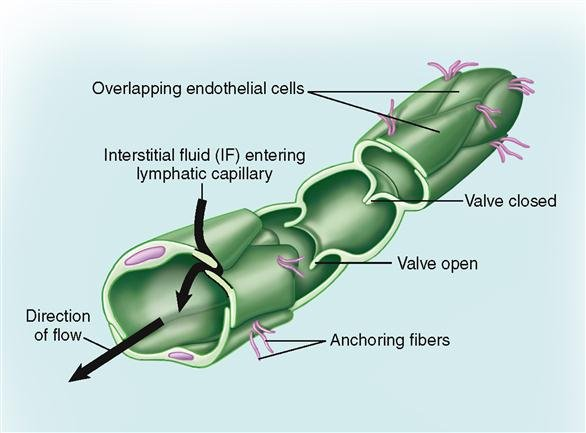
Larger lymphatic vessels have smooth muscle and internal valves. There is no central pump: skeletal muscle movement, pressure changes in the thorax during breathing and the pulsations of adjacent arteries propel lymph, and physical activity or passive movement keeps it flowing (slide 8).
Immune response, immunity and its three functions (slide 9)
The immune response is the cellular defense reactions of the body that protect against threats. Immunity is a state of protection, with three functions:
| Function | Meaning |
|---|---|
| Defense | Resistance to invaders |
| Surveillance | Of self, for mutant or cancerous cells |
| Homeostasis | Removing cellular debris |
Memory and specificity (slide 10)
- Memory: a faster, stronger adaptive response on re-exposure to an antigen.
- Adaptive specificity: B-cell and T-cell receptors recognize particular epitopes.
- Innate receptors recognize patterns shared by groups of organisms.
Two kinds of immune response (slides 22, 25)
| Humoral immunity | Cellular (cell-mediated) immunity | |
|---|---|---|
| Works through | Antibodies (immunoglobulins) | T cells |
| Effector | Plasma cells, transformed from B cells, are the actual antibody-producing cells | Killer T cells (CD8, cytotoxic) destroy virus-infected, tumor and transplanted cells; perforin release is important |
Phagocytosis, step by step (slides 26–28)
- The microbe adheres to the phagocyte.
- Pseudopods engulf the particle into a phagocytic vesicle, the phagosome.
- The phagosome fuses with a lysosome: the phagolysosome.
- Acid hydrolase enzymes kill and digest the microbe, leaving a residual body.
- Indigestible residual material is removed by exocytosis.
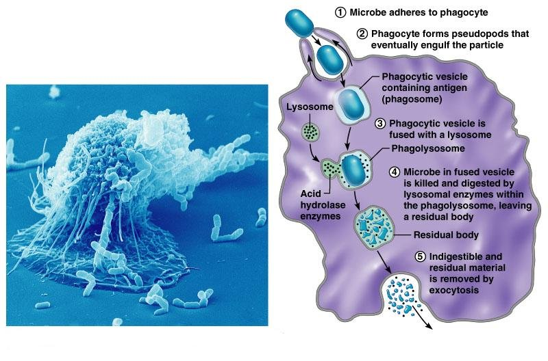
8.2 · Objectives c & d — Acquired and innate; natural and artificial
| Category (slides 11–13) | What it is | Natural | Artificial |
|---|---|---|---|
| Active (acquired) | Acquired by the body’s own processes after exposure to the antigen | The body comes in contact with the antigen naturally | Antigen exposure done on purpose: vaccination |
| Passive (acquired) | Transfer of preformed antibodies from another source; immediate protection that declines as the transferred antibodies are lost | Maternal IgG through the placenta, IgA in breast milk | Tetanus immune globulin, rabies immune globulin |
Innate immunity (slide 13) is the set of defenses that act without prior sensitization to a particular antigen. It recognizes conserved microbial patterns and signs of cell injury, and includes skin and mucosal barriers, phagocytes, complement and interferons. Natural killer cells provide its cytotoxic defense and are approximately 5–15% of circulating lymphocytes. Host characteristics contribute to species-specific resistance.
8.3 · Objective e — The blood cells and their roles in immunity
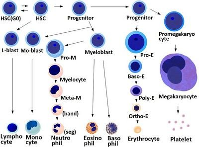
The neutrophil line (slide 14): promyelocyte → myelocyte → metamyelocyte → band form → segmented neutrophil. The band form immediately precedes the segmented neutrophil. On the slide the promyelocyte comes straight from the progenitor, and the myeloblast gives the eosinophil and the basophil. Standard texts start the neutrophil line at the myeloblast too; the exam follows the slide.
| Cell (slides 15–19) | Role |
|---|---|
| Neutrophil (granulocyte; “poly”, PMN (polymorphonuclear leukocyte)) | Phagocytosis; the first responders, most numerous |
| Eosinophil (granulocyte) | Allergic reactions and parasitic invasion |
| Basophil (granulocyte) | Similar to tissue mast cells |
| Monocyte / macrophage (agranulocyte) | Monocytes circulate in blood and enter tissues during inflammation, where tissue signals turn them into macrophages. Some resident macrophages develop before birth and renew locally. Macrophages remove material and coordinate inflammatory responses. A histiocyte is a tissue macrophage. |
| B lymphocyte (agranulocyte) | Humoral immunity; becomes the plasma cell |
| T lymphocyte (agranulocyte) | Cellular immunity; processed in the thymus |
| Natural killer cell | Unlike cytotoxic T cells, does not need to recognize a specific antigen; targets tumor cells and protects against a wide variety of infectious microbes |
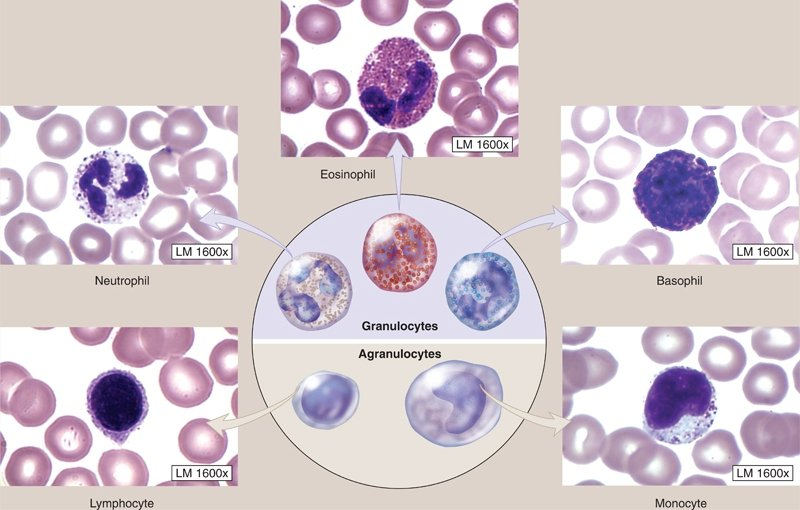
Telling the lymphocytes apart (slides 21 and 34)
| T cells | B cells | Natural killer cells | |
|---|---|---|---|
| Origin | All from hematopoietic stem cells | ||
| Maturation | Thymus | Bone marrow | Bone marrow and other tissues |
| Peripheral sites | Lymph-node paracortex, splenic white pulp, mucosal lymphoid tissue | Lymph-node follicles, spleen, mucosal lymphoid tissue | Blood and tissues |
| Immune role | Adaptive cellular | Adaptive humoral | Innate cytotoxic |
| Populations | CD4 helper, CD8 cytotoxic, regulatory, memory | Plasma cells, memory B cells | CD56 bright and CD56 dim |
| Products | Cytokines such as IL-2 (interleukin-2) and IFN-γ (interferon gamma); cytotoxic granules | Immunoglobulins from plasma cells; cytokines | Perforin, granzymes, cytokines |
| Antigen receptor | T-cell receptor | Surface immunoglobulin | Activating and inhibitory innate receptors |
| Memory | Memory T cells | Memory B cells | No conventional B- or T-cell-type memory |
| Markers | CD3; CD4 or CD8 on the major subsets | CD19 and CD20 on many B cells | CD56; CD16 on many |
| Surface immunoglobulin | Absent | Present; lost with plasma-cell differentiation | Absent |
8.4 · Objectives f & g — Antigens, and how they start a response
There is no antigen slide as such; these are the deck’s antigen facts, gathered.
- What is recognized: adaptive B-cell and T-cell receptors recognize particular epitopes; innate receptors recognize patterns shared by groups of organisms (slide 10). Each antibody pairs with a compatible antigen shape (slide 40).
- Types of antigen on the antibody-effects diagram (slide 58): soluble toxin molecules, viruses and bacteria; the virus and bacterium carry antigenic determinants on their surface. The type decides what antibody binding achieves (section 8.8).
- Starting a response: exposure to the antigen initiates the antigen-dependent phase of B-cell maturation, in which the B cell differentiates into a plasma cell producing specific antibody (slide 22); the antigen selects the matching B cell from the repertoire and drives its clonal expansion (slide 23).
- Presentation to T cells: helper T cells recognize antigenic peptides presented by major histocompatibility complex class II; cytotoxic T cells recognize peptides on class I (slides 30–31).
8.5 · Objective h — Primary and secondary response
| Primary response (slide 35) | Secondary response (slide 36) | |
|---|---|---|
| When | After the first exposure to an antigen | After re-exposure |
| Speed and size | Antibody production develops over days; timing and magnitude depend on the antigen and host | Memory cells support a generally faster and stronger response |
| Antibody class | IgM rises first; IgG later and lower | Class-switched antibodies, often IgG, may reach higher levels and persist longer |
| Memory | Memory cells develop during this response | Memory cells drive it |
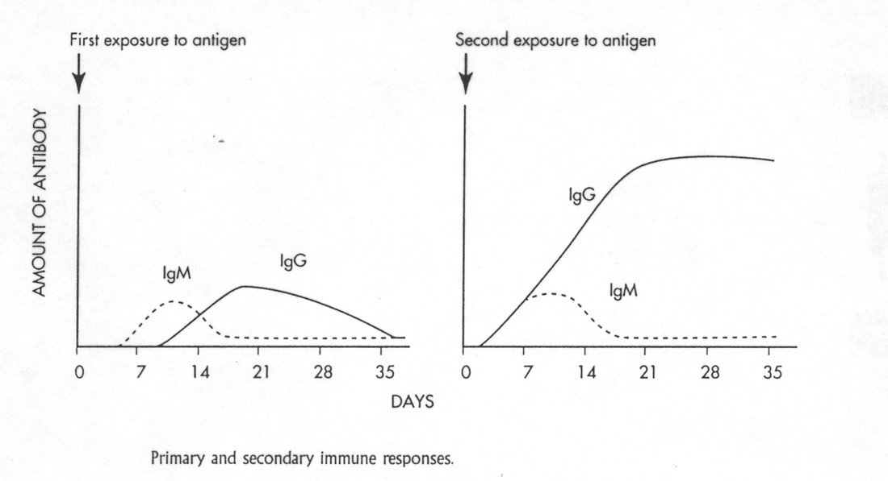
8.6 · Objective i — The B lymphocyte and its metamorphosis into the plasma cell
Humoral immunity uses antibodies; B cells are transformed into plasma cells, the actual antibody-producing cells (slide 22). B-cell maturation has two phases:
- Antigen-independent phase: expression of surface IgM.
- Antigen-dependent phase: differentiation of the B cell into a plasma cell producing specific antibodies. Exposure to the antigen initiates this phase.
Helper (CD4) T cells support it: helper signals support B-cell differentiation and antibody production, while plasma cells do the secreting (slide 24). B cells mature in the bone marrow and lose surface immunoglobulin when they become plasma cells (slide 34).
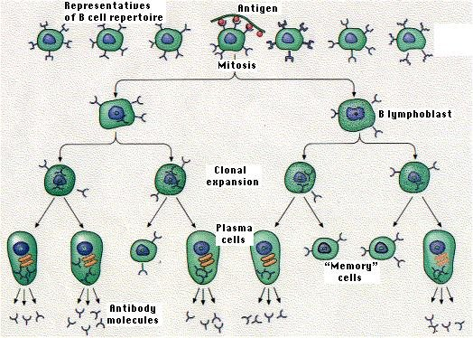
8.7 · Objectives j & k — Antibodies (immunoglobulins) and their morphology
Electrophoresis (slide 38) separates serum proteins in an electric field into albumin (nearest the positive pole) and the alpha, beta and gamma globulin fractions (gamma nearest the negative pole). Immunofixation characterizes immunoglobulin heavy- and light-chain types.
Immunoglobulins (slide 39) contribute to plasma proteins in variable proportions and are present in blood, tissue fluid and secretions. A basic antibody unit has two heavy chains and two light chains. Light chains are either kappa or lambda; each light chain has a variable and a constant region. The heavy- and light-chain variable regions jointly form the antigen-binding site.
| Part (slides 41–43) | What it is |
|---|---|
| Heavy-chain constant region | Determines the immunoglobulin class (heavy chain μ, δ, γ, ε or α). IgG heavy chains have three constant domains; the number varies by class. |
| Disulfide bonds | Connect the chains and support the structure |
| Fab | The antigen-binding regions and the adjacent constant domains |
| Fc | Heavy-chain constant regions involved in effector functions; the complement-binding site sits on CH2 |
| Papain cleavage | Cuts IgG at the hinge into two Fab fragments and the Fc |
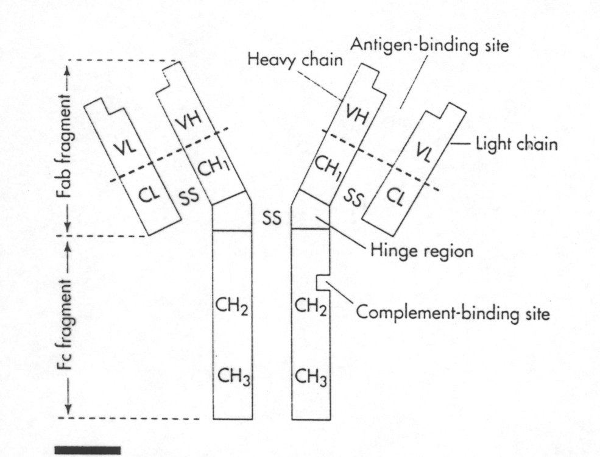
The five classes (slides 44–46)
| Class | Approx. share of serum | Structure | Where and what |
|---|---|---|---|
| IgM | 5–10% (80–170 mg/dL) | Secreted as a pentamer with a J chain; a monomer on the B-cell surface | Often the first class secreted in a new response; agglutination (the pentamer places many binding sites on one molecule, linking antigen-bearing particles into clumps) and efficient classical complement activation; B-cell antigen receptor |
| IgG | 75–80% (700–1700 mg/dL) | Monomer; four subclasses | Serum and tissue fluid; crosses the placenta; prominent in secondary responses; neutralization, opsonization, maternal protection; complement activation varies by subclass |
| IgA | 10–15% (170–280 mg/dL) | Mainly monomeric in serum; secretory IgA usually a dimer with a J chain and secretory component | Saliva, tears, colostrum; neutralization and prevention of microbial attachment at mucosal surfaces |
| IgD | Less than 1% | Monomer | With IgM on many mature naive B cells; part of the B-cell antigen-receptor system |
| IgE | Less than 1% | Monomer binding high-affinity cell receptors | Bound to mast cells and basophils; immediate allergic reactions including IgE-mediated anaphylaxis; defense against some parasites |
The serum values are approximate adult comparisons; reference intervals vary by laboratory and method (slide 46).
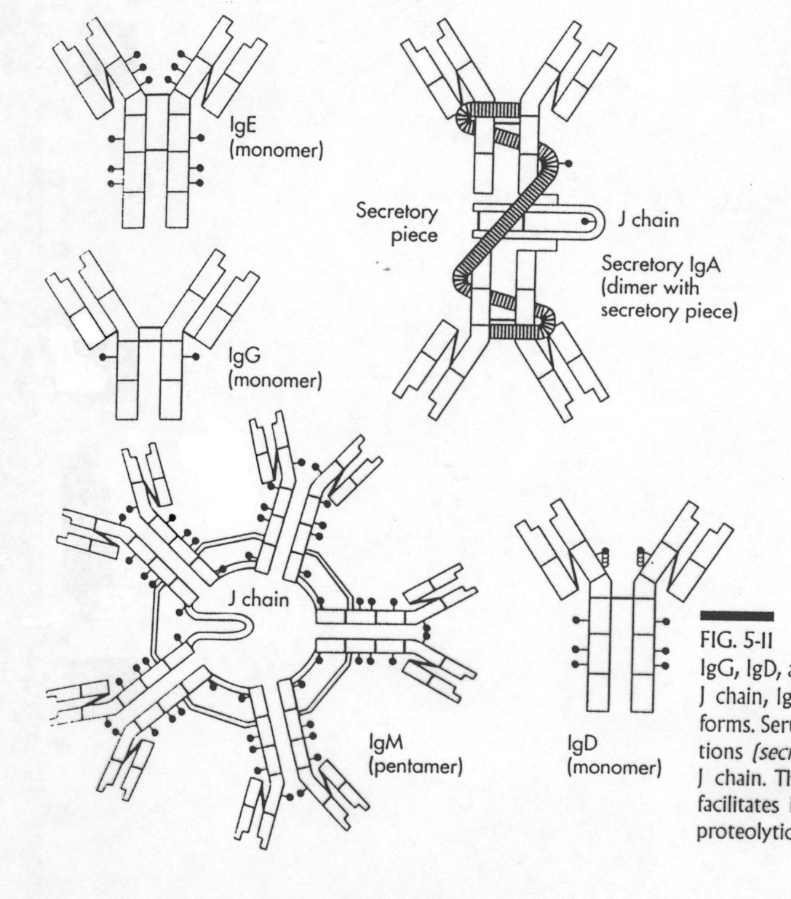
8.8 · Objective l — What antibodies do, and how they destroy antigens
| Function (slides 47–59) | Mechanism |
|---|---|
| Agglutination | Clumping: varying amounts of immunoglobulin join varying amounts of antigen; if the antigens are on a cell’s surface, agglutination occurs. Agglutination is listed as a main function of IgM (slide 46). |
| Neutralization | Antibody binding blocks an essential interaction with a host cell: it can prevent viral attachment or entry, or stop a toxin reaching or acting on its target. It limits activity without requiring physical destruction. ★ |
| Lysis | Destruction of the cell, by incorporation with the complement system |
| Precipitation | Antibodies cross-link soluble antigens into larger complexes that can become insoluble and precipitate; complex formation may help phagocytes clear them |
| Opsonization | Antibody joins antigen on a cell’s surface, and this coating facilitates ingestion by a phagocyte |
Orientation matters (slide 56): on an antibody-coated infected cell, the antigen-binding ends hold the cell and the Fc region faces outward to the responding cell. Natural killer cells perform antibody-dependent cellular cytotoxicity: their CD16 binds the Fc region of IgG coating a target cell (slide 32).
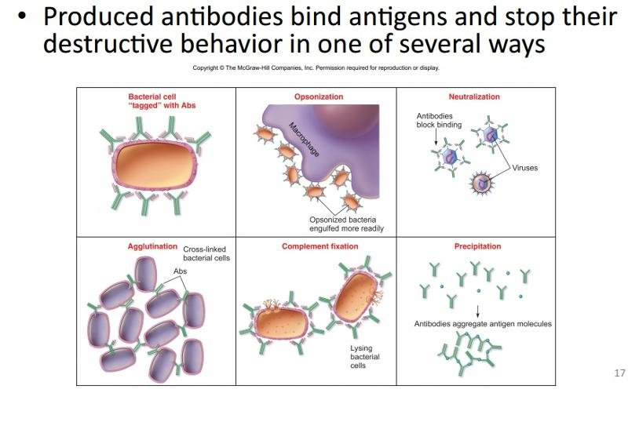
ABO red-cell compatibility (slide 49)
| Recipient | Red-cell antigens | Usual plasma antibodies | Compatible donor red cells |
|---|---|---|---|
| O | Neither A nor B | Anti-A and anti-B | O only |
| A | A | Anti-B | O, A |
| B | B | Anti-A | O, B |
| AB | A and B | Neither | O, A, B, AB |
Every other pairing agglutinates. This is the ABO red-cell comparison only: Rh status, other antibodies and compatibility testing also matter, and plasma compatibility differs. ★ Group O red cells carry neither antigen, which is why the narration calls O the universal donor.
8.9 · Objectives m–p — Cellular immunity and the T lymphocytes
| T cell | Recognizes | Function |
|---|---|---|
| Helper T cell (CD4) (slides 24, 30) | Antigenic peptides presented by major histocompatibility complex class II; activation needs appropriate recognition and additional signals | Coordinates cell-mediated and humoral responses through cytokines and cell contact; helper signals support B-cell differentiation and antibody production; IFN-γ (interferon gamma) promotes macrophage activation and antimicrobial activity |
| Cytotoxic T cell (CD8) (slides 25, 31) | Antigenic peptides presented by major histocompatibility complex class I | Kills infected or malignant host cells: virus-infected, tumor and transplanted cells; perforin and granzymes trigger target-cell apoptosis |
| Regulatory T cell (slide 32) | — | Limits immune activation and maintains self-tolerance; many are CD4 cells expressing FOXP3 |
| Memory T cell (slide 34) | — | Carries memory forward |
8.10 · Objectives q & r — Hypersensitivity and its four types
Hypersensitivity is when immune reactions, either humoral or cellular, result in injury to the body (slide 60). Four types are seen — and ★ the number names a mechanism, not a severity.
| Type | Mechanism | Examples on the slides |
|---|---|---|
| I — anaphylactic, immediate (slides 61–62) | A previous exposure sensitizes: IgE is produced and becomes fixed on mast cells and basophils. On re-exposure the antigen joins that surface antibody and mediators such as histamine are released. | Local allergy (swelling, vasodilation); anaphylaxis, a rapid systemic reaction in which small exposures can cause severe disease: bronchospasm, laryngeal edema, hypotension; shock and skin findings are not required in every case. Triggers: drugs, insect venoms, other allergens. |
| II — cytotoxic, antibody-mediated (slide 63) | IgG or IgM binds antigens on cells or within tissues; injury through phagocytosis, complement or antibody-dependent cellular cytotoxicity. Antibodies can also stimulate or block receptor function. | ABO incompatibility; anti-GBM (anti-glomerular basement membrane) disease, which can cause glomerulonephritis and pulmonary hemorrhage |
| III — immune complex (slide 64) | Antigen–antibody complexes deposit in tissues or vessel walls; complement and recruited inflammatory cells cause the injury | Arthus reaction (local, previously sensitized person); serum sickness (systemic, circulating complexes); triggers include foreign proteins, drugs, biologic therapies; lupus, immune-complex glomerulonephritis or arthritis |
| IV — cell-mediated, delayed (slide 65) | Sensitized CD4 or CD8 T cells; common delayed reactions develop over 24–72 hours; cytokines recruit and activate inflammatory cells, cytotoxic T cells injure targets directly; persistent stimulation can produce granulomas in particular settings | Contact dermatitis, tuberculosis-related reactions, T-cell-mediated transplant rejection |
8.11 · Objective s — The complement system
Complement (slide 66) is a network of circulating and cell-associated proteins and regulators. The liver produces many of the circulating components, many circulate as inactive precursors, and activation starts a regulated cascade. Its major functions (slide 67):
- Opsonization: particulate antigens are coated with complement proteins (C3b) so phagocytosis happens easily and rapidly.
- Inflammation: complement proteins cause vasodilation, letting more immune cells in, and some are chemotactic for neutrophils and macrophages (slide 69); C3a, C4a and C5a promote the inflammatory response (slide 75).
- The membrane attack complex (slide 68): C5b initiates assembly of the terminal components C6–C9; the complex forms pores in a susceptible membrane (multiple C9 subunits make the channel, slide 73), disrupting ionic and osmotic balance; severe disruption causes lysis.
| ★ Pathway (slide 70) | Starts when |
|---|---|
| Classical | Commonly, C1 recognizes antigen-bound IgM or IgG (some activation is antibody-independent) |
| Lectin | Recognition proteins (mannose-binding lectin) bind microbial carbohydrates and activate associated proteases |
| Alternative | C3 activation and amplification on permissive surfaces, using factor B, factor D and properdin (slide 71) |
All three pathways converge on C3 activation, then on C5, and C5b leads into the membrane attack complex.
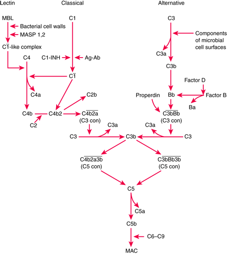
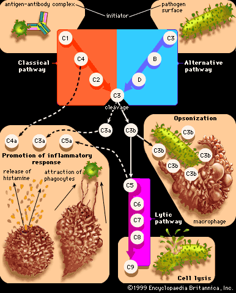
8.12 · Objectives t & u — Autoimmunity and autoimmune examples
No slide defines autoimmunity or is given to autoimmune disease. What the deck does say:
- Self-tolerance is actively maintained: regulatory T cells limit immune activation and maintain self-tolerance (slide 32).
- Antibody against self can act two ways in type II hypersensitivity: destroying the cell it binds, or stimulating or blocking a receptor without destroying it (slide 63).
- Examples the deck names by mechanism: anti-GBM (anti-glomerular basement membrane) disease (type II, slide 63); lupus and immune-complex glomerulonephritis or arthritis (type III, slide 64).
- Autoantibodies become more common with age, and clinical findings determine their significance (slide 77).
8.13 · Objectives v & w — Immunodeficiency, and the effect of age
| Primary immunodeficiency (slide 76) | Secondary immunodeficiency (slide 77) | |
|---|---|---|
| What | Intrinsic defects in immune development or function, often with a genetic basis | Reduced function from disease, medications, malignancy or inadequate nutrition |
| Primary disorder (slide 76) | Defect | Consequence |
|---|---|---|
| X-linked agammaglobulinemia | Impaired B-cell maturation, very low antibodies | Recurrent pyogenic bacterial infections |
| DiGeorge syndrome | Variable impairment of thymic and T-cell development | — |
| Severe combined immunodeficiency | Profound T-cell dysfunction with impaired B-cell immunity | May present in early infancy or be found by newborn screening |
Age (slide 77)
- Neonates: immunity still developing, protected by maternal IgG and milk-associated IgA; maternal antibody protection declines at rates that vary by antibody and exposure.
- Older adults: changes in lymphocyte function and repertoire can reduce responses to new antigens; autoantibodies become more common, and clinical findings determine their significance.
9 · Pulmonary Pathophysiology
Lecture 9 · 20 October 2026 · Matthew Ward, DMSc, MBA, PA-C (title slide: “Lecture modified & presented by”). No deck was posted. The 109 slides cited here are a rebuild from the two-part lecture video: last year’s deck in the order shown, plus the seven slides added this year (44, 51, 59, 64, 82, 98 and 103).
Instructional Objectives
- Review the anatomy of the pulmonary system
- Review the functions of the pulmonary system
- Describe the molecular mechanisms of pulmonary pathologies
- Compare and contrast the etiologies and pathophysiological processes of different pulmonary diseases,
including:
- Acute respiratory failure
- Pulmonary hypertension
- Pulmonary malignancies
- Obstructive pulmonary diseases
- Restrictive pulmonary diseases
- Asthma
- Pulmonary edema
- Pulmonary embolism
- Cor pulmonale
9.0 · What the lecture adds
The lecture ran 177 minutes in two video parts (1 hour 45 minutes and 1 hour 12 minutes), both transcribed in full and aligned to the slides; no second transcription exists for this video. The questions follow the minutes each slide was on screen:
| Where the minutes went | Min |
|---|---|
| Acute respiratory failure (slides 6–14) | 19.7 |
| Asthma (slides 35–44) | 14.6 |
| Pleural effusion (slides 92–98) | 12.8 |
| Emphysema and the obstructive pattern (slides 52–59) | 12.6 |
| Pulmonary hypertension (slides 15–16, 20–23) | 11.3 |
| Sarcoidosis, hypersensitivity pneumonitis, occupational disease (slides 75–81) | 9.1 |
| Pneumonia (slides 104–109) | 9.1 |
| Pneumothorax; chronic bronchitis | 9.0 each |
| Acute respiratory distress syndrome (slides 83–85) | 8.7 |
The lecturer narrates in full sentences and rarely flags a point. The few places he did:
| Said | What it points at |
|---|---|
| “So, remember the names artery and vein are describing the direction of flow relative to the heart, not necessarily whether the blood is oxygenated or deoxygenated.” [part 1, 1:43] | Slide 3: the pulmonary trunk and arteries carry deoxygenated blood to the alveoli (section 9.1). |
| “So the important clinical distinction is whether air, blood, or the membrane or the oxygen source is responsible.” [part 1, 19:21] | The five mechanisms of hypoxic respiratory failure on slide 9 (section 9.3). |
| “The distinction between dead space and shunting is also important because dead space is ventilation with inadequate perfusion, while shunt is perfusion with inadequate ventilation.” [part 1, 23:11] | Shunt sits under hypoxic failure (slide 9); increased dead space, “wasted ventilation”, under hypercapnic failure (slide 10). |
| “The key point is that a larger bronchial lumen is not automatically a healthier bronchus.” [part 1, 1:38:55] | Bronchiectasis: the dilation comes from destroyed walls, and recovery from a flare does not restore the architecture (section 9.6). |
| “I’ll repeat, a tension pneumothorax is progressively getting worse that it not only affects our ventilation system but also our circulatory system.” [part 2, 39:11] | Tension pneumothorax: air enters and cannot leave, pressure rises, the mediastinum shifts and venous return and cardiac output fall (section 9.7). |
9.1 · Objectives a & b — Anatomy and function of the pulmonary system
Pulmonary circulation (slide 3): deoxygenated blood leaves the right ventricle by the pulmonary trunk and pulmonary arteries to the capillaries around the alveoli. The normal pulmonary circulation is a high-flow, low-pressure system: about 22/8 to 25/8 mmHg, with a mean of 15 mmHg (slide 20).
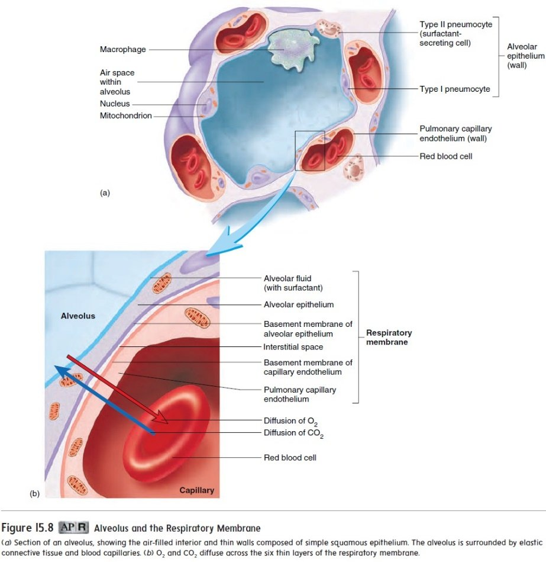
Moving fluid across the capillary (slides 17–19)
Net filtration out of a capillary follows the Starling relation on slide 17: Jv = Kf[(Pc − Pif) − (πc − πif)]. Capillary hydrostatic pressure (Pc) and interstitial colloid osmotic pressure (πif) push fluid out; interstitial fluid pressure (Pif) and plasma colloid osmotic pressure (πc) hold it in.
| Slide 18’s example | Hydrostatic pressure | Osmotic pressure | Net |
|---|---|---|---|
| Arterial end | 35 mm (larger) | 25 mm (smaller) | 10 mm out of the capillary into the tissues |
| Venous end | 15 mm (smaller) | 25 mm (larger) | 10 mm into the capillary |
Hydrostatic pressure falls along the capillary while osmotic pressure stays about the same, so fluid filters out at one end and returns at the other. Lymphatic capillaries take up what is left.
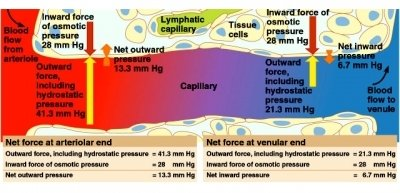
9.2 · Objective c — Molecular mechanisms of pulmonary pathologies
No slide is titled “molecular mechanisms”; these are the molecular steps the deck gives, disease by disease.
| Disease | Molecular mechanism |
|---|---|
| Allergic asthma (slide 39) | IgE binds mast cells, which release histamine, leukotrienes (slow-reacting substances of anaphylaxis), prostaglandins, bradykinins, eosinophilic chemotactic factor and serotonin in response to antigen |
| Emphysema (slides 53–54) | Proteolytic enzymes from neutrophils and macrophages destroy alveolar walls; smoking causes the inflammation that releases them and inactivates alpha-1 antitrypsin, the protective enzyme that inhibits proteolytic breakdown of alveolar tissue |
| Acute respiratory distress syndrome (slides 84–85) | Acute lung injury activates the complement system and starts neutrophil sequestration in the lung; inflammatory deposition of proteins forms hyaline membranes; lack of surfactant lets alveoli collapse |
| Hypersensitivity pneumonitis (slide 79) | Antibodies to inhaled particles form antigen–antibody complexes that deposit in the lung: a type III hypersensitivity reaction (cell-mediated immunity also contributes, per the lecturer) |
| Diffuse interstitial lung disease (slides 70, 73) | An immune reaction to an initial injury of alveolar epithelial or capillary endothelial cells; fibroblasts lay down collagen |
| Sarcoidosis (slides 75–76) | Alveolar macrophages activated by an unknown trigger; abnormal T-cell function |
9.3 · Objective d.1 — Acute respiratory failure
| Term (slide 7) | Meaning |
|---|---|
| Hypoxemia | Decreased blood oxygen: low arterial oxygen (PaO2) and low hemoglobin saturation, by arterial blood gas or pulse oximetry |
| Hypoxia | Decreased tissue oxygenation |
| Acute respiratory failure | Disturbed gas exchange with abnormal arterial blood gas values on room air (FiO2, fraction of inspired oxygen, 21%): PaO2 < 60 mmHg (hypoxemia), PaCO2 > 50 mmHg, pH < 7.30 |
| Category (slides 8–10) | What fails | Mechanisms |
|---|---|---|
| Hypoxic respiratory failure | Respiration or oxygenation: hypoxemia with normal or low carbon dioxide | Ventilation/perfusion mismatch; shunt; decreased diffusion; alveolar hypoventilation; high altitude |
| Hypercapnic (hypercarbic) ventilatory failure | Ventilation: carbon dioxide is not removed, so it rises (hypercapnia); alveolar ventilation is inadequate for the carbon dioxide produced | Reduced alveolar ventilation or respiratory rate; inability to signal effector mechanisms (Guillain-Barré, spinal cord injury); increased dead space (wasted ventilation: hypovolemia, low cardiac output, pulmonary embolism); increased carbon dioxide production (fever, infection, trauma or burns); inability to sense a raised PaCO2 (drugs, alkalosis) |
| Combined | Both respiratory and ventilatory failure | — |
★ Dead space against shunt (section 9.0): dead space is ventilation with inadequate perfusion (wasted ventilation, a hypercapnic mechanism); shunt is perfusion with inadequate ventilation (a hypoxic mechanism).
| Causes of acute respiratory failure (slide 14) | Examples |
|---|---|
| Central nervous system | Sedatives, stroke, brain trauma or tumor |
| Neuromuscular disease | Multiple sclerosis, myasthenia gravis, polio, Guillain-Barré syndrome, quadriplegia |
| Chest skeletal system | Kyphoscoliosis, chest trauma, pleural effusion, massive ascites |
| Airway | Laryngospasm, foreign-body aspiration |
| Pulmonary parenchyma | Shock, pulmonary embolism, pulmonary edema, advanced emphysema, pneumonia, acute respiratory distress syndrome |
Shown inside this section (slides 11–13): in acute lung injury, water, cells and protein leak into the tissue around the alveoli and cause large areas of alveoli to collapse, reducing the oxygen that reaches the blood (section 9.7 has the syndrome itself).
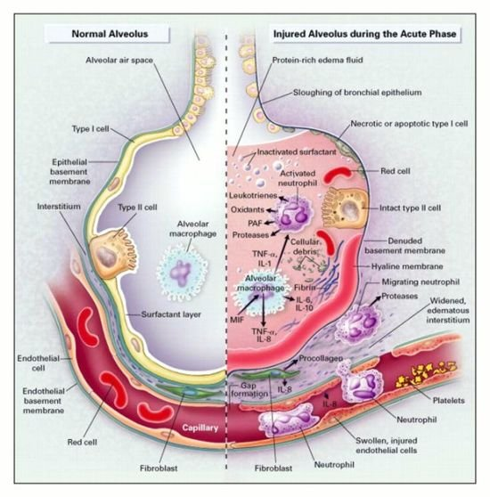
9.4 · Objective d.2 — Pulmonary hypertension
The normal pulmonary circulation is high flow at low pressure (mean about 15 mmHg). Pulmonary hypertension is a mean pulmonary arterial pressure at rest > 20 mmHg (slide 20). The lecturer added that it “has to be measured by right heart catheterization” [part 1, 33:14] (said in the recording, not on a slide).
| Type (slide 21) | Features |
|---|---|
| Idiopathic | Cause unknown; rapidly progressive; more common in women; third to fourth decade |
| Secondary | Results from a known disease process |
| Route to pulmonary hypertension (slide 22) | Examples |
|---|---|
| Increased pulmonary blood flow or viscosity | Left-to-right shunt (atrial septal defect, patent ductus arteriosus); polycythemia |
| Increased resistance to blood flow | Hypoxic vasoconstriction (chronic bronchitis, advanced emphysema); obstruction from embolism; pulmonary fibrosis |
| Increased left atrial pressure | Mitral stenosis, mitral regurgitation, left ventricular failure |
Pathogenesis (slide 23): chronic exposure to the disease process changes the arterial lumen. The walls of the small pulmonary vessels thicken from more muscle mass in the media (local tissue hypoxia, acidosis); and the intima becomes fibrotic.
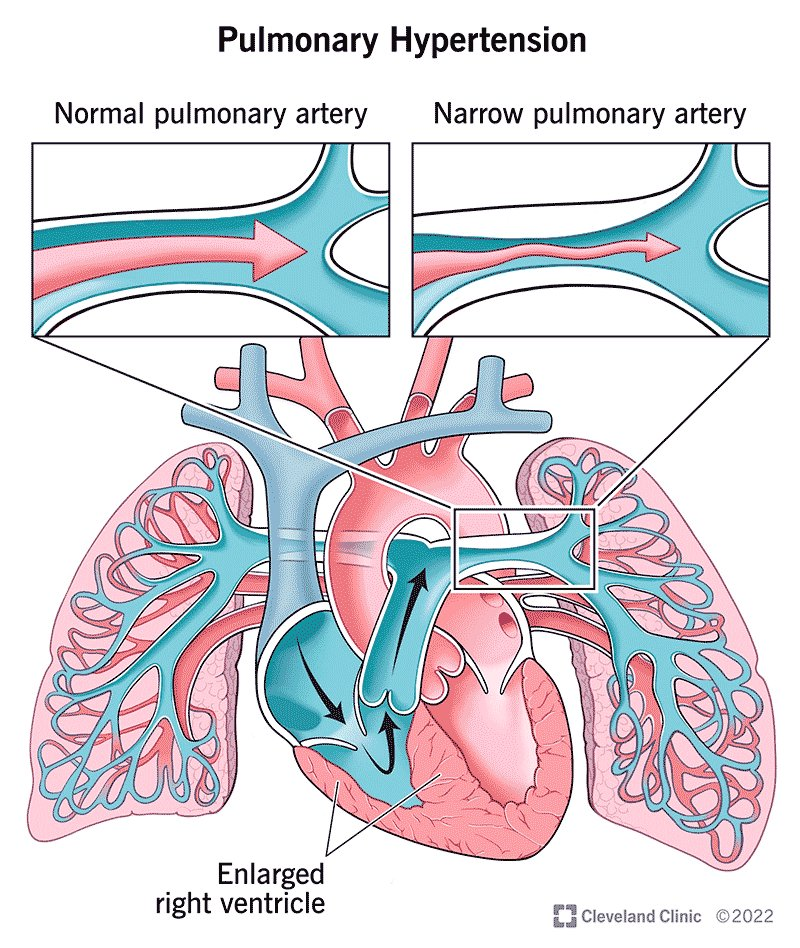
9.5 · Objective d.3 — Pulmonary malignancies
| Carcinoma (slides 25–27) | Share | Where | Doubling | Character |
|---|---|---|---|---|
| Squamous cell (non-small cell) | 20–30% | Central: two-thirds arise in central bronchi near the hilus, as intraluminal growth | Volume in 100 days | Sputum cytology can show it, so it is detected earlier than other lung cancers; spreads to regional lymph nodes |
| Adenocarcinoma | 35–40% (the largest share) | Periphery; not as amenable to early detection | 180 days | Acinar, bronchoalveolar and papillary tumors; metastasizes to distant organs |
| Large cell | 5–10% | Periphery, like adenocarcinoma | About 100 days | Large cells in nests or clusters; distant metastasis |
| Small cell (oat cell) | 15–20% | Central bronchi, compressing and narrowing them | About 33 days (fastest) | Widespread metastasis common; the most resistant to therapy; paraneoplastic syndrome |
The doubling times and shares are approximate teaching figures, not predictions for one patient (the lecturer’s caveat, section 9.0); the ranking is what to know.
9.6 · Objective d.4 — Obstructive pulmonary diseases
Obstructive diseases are manifested by increased airflow resistance (slide 33), from one of three places (slides 33–34):
| Where the obstruction is | Diseases |
|---|---|
| Conditions in the wall of the lumen | Asthma, acute bronchitis, chronic bronchitis |
| Loss of lung parenchyma, or pressure around the outside of the airway | Emphysema; lymphadenopathy; tumor |
| Material in the airway lumen | Bronchiectasis, bronchiolitis, cystic fibrosis, acute tracheobronchial obstruction, epiglottitis, croup, foreign body |
In chronic obstructive lung disease (slides 30–32), bronchioles narrow and block with mucus, alveoli are destroyed, and the lungs do not deflate like normal lungs because air is trapped in damaged air sacs.
Acute bronchitis (slides 45–47)
Acute inflammation of the trachea and bronchi. Causes: viral (influenza A or B, parainfluenza, respiratory syncytial virus, coronavirus, rhinovirus, coxsackievirus, adenovirus) or nonviral (Streptococcus pneumoniae, Haemophilus influenzae, Mycoplasma, Moraxella, Chlamydia pneumoniae; heat, smoke, irritant chemicals, allergy). The airways become inflamed and narrow with more mucus, loss of ciliary function and loss of parts of the ciliated epithelium. Microorganisms may leave a long-lasting hyperirritability with bronchospasm, so an improving cough can outlast the illness (slide 51).
Chronic bronchitis — type B, the “blue bloater” (slides 48–51)
- Definition: hypersecretion of bronchial mucus with a chronic or recurrent productive cough for more than 3 months a year for 2 or more successive years; the obstruction is persistent and irreversible; age over 30–40.
- Causes: cigarette smoking (90%), repeated airway infections, genetic predisposition, inhaled irritants.
- Pathogenesis: chronic inflammation; mucosal swelling and fibrosis; hypertrophy of bronchial glands and goblet cells; thicker bronchial walls; neutrophil inflammation; mucus plus purulent exudate forms bronchial plugs; mucociliary clearance fails as ciliated columnar epithelium is replaced by squamous cells.
- Consequences: high airflow resistance raises the work of breathing and oxygen demand; narrowing and plugs worsen V/Q (ventilation/perfusion) mismatch, giving hypoxemia and hypercarbia. “Blue bloater” reflects cyanosis and the edema of right-sided heart failure. Hypoxic vasoconstriction → pulmonary hypertension → right ventricular dilation (cor pulmonale) → right-sided failure.
- A persistent productive cough describes a symptom pattern; airflow measurements establish whether obstruction goes with it (slide 51).
Emphysema — type A, the “pink puffer” (slides 53–59)
- Definition: destruction of alveolar walls without fibrosis and abnormal enlargement of the distal air sacs; the slide states it is always associated with chronic bronchitis.
- Causes: smoking (more than 70 pack-years is highly predictive), air pollution, alpha-1 antitrypsin deficiency (1%, hereditary).
- Pathogenesis: proteolytic enzymes from neutrophils and macrophages destroy alveoli; smoking adds inflammation and inactivates alpha-1 antitrypsin. Lost elastic tissue narrows the smaller bronchioles; lost lung tissue removes the radial traction that holds the airways open, raising resistance and cutting airflow. Air is trapped, air sacs distend and bullae form.
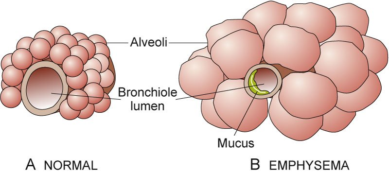
| Emphysema type (slides 57–58) | What it destroys |
|---|---|
| Centriacinar (centrilobular) | The respiratory bronchioles; associated with chronic bronchitis |
| Panacinar (panlobular) | The alveoli |
| Paraseptal | The peripheral lobules (alveolar ducts and sacs) |
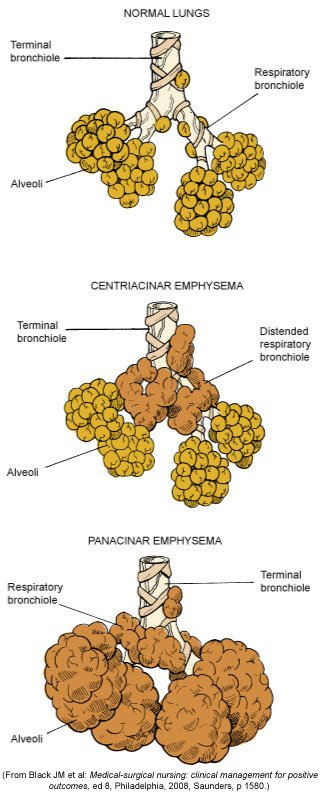
The obstructive pattern on testing (slide 59)
- A low FEV1/FVC (forced expiratory volume in 1 second to forced vital capacity) ratio identifies expiratory airflow limitation.
- A high residual volume supports incomplete emptying.
- A reduced DLCO (diffusing capacity for carbon monoxide) raises a separate gas-transfer question.
Restriction looks different: its confirming finding is a low total lung capacity (section 9.7).
Bronchiectasis (slides 60–64)
- Destruction of bronchial walls dilates the bronchi: an obstructive, suppurative disorder. Congenital (50% related to cystic fibrosis) or acquired. Children are at higher risk: their soft, elastic bronchi are easily damaged by overinflation and by distention from inflammation or infection.
- Pathogenesis: recurrent infection and inflammation of the bronchial walls; persistent dilation of medium-sized bronchi and bronchioles; destruction of central bronchial walls and obliteration of peripheral bronchi; H. influenzae is the most common bacterial cause; ciliated columnar epithelium turns squamous, pus forms. The dilated airways become pockets of infection, producing purulent, foul-smelling sputum.
- Improvement in a flare does not restore the airway architecture (slide 64). ★ A larger bronchial lumen is not a healthier bronchus.
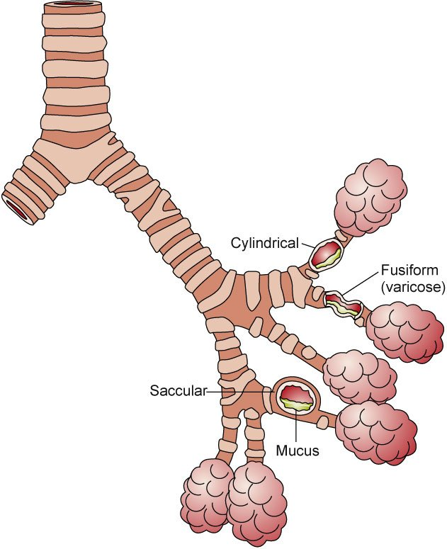
9.7 · Objective d.5 — Restrictive pulmonary diseases
Restrictive diseases are manifested by decreased expansion of the lungs from changes in the parenchyma, pleura, chest wall or neuromuscular function (slide 66).
| Group (slides 67–68) | Disorders |
|---|---|
| Parenchyma: fibrotic interstitial | Diffuse interstitial lung disease, sarcoidosis, hypersensitivity pneumonitis, occupational lung disease |
| Parenchyma: atelectatic | Acute (adult) respiratory distress syndrome; infant respiratory distress syndrome |
| Pleural space | Pneumothorax, pleural effusion |
| Neuromuscular, chest wall, obesity | Guillain-Barré, myasthenia gravis, kyphoscoliosis, flail chest, obstructive sleep apnea |
| Infection or inflammation | Pneumonia, pulmonary tuberculosis, severe acute respiratory syndrome |
On testing (slide 82): a low FVC alone does not establish restriction; a low total lung capacity confirms the restrictive pattern. Then separate stiff tissue from an external load or muscle weakness, using gas transfer, imaging and history.
Fibrotic interstitial lung diseases (slides 69–74)
Acute, subacute or chronic infiltration of alveolar walls by cells, fluid and connective tissue; untreated, the inflammation may progress to irreversible fibrosis. Diffuse interstitial lung disease is an immune-mediated disorder after an initial lung injury: it begins with injury to alveolar epithelial or capillary endothelial cells, thickens the interstitium and alveolar walls and adds collagen. Persistent alveolitis obliterates alveolar capillaries and ends in irreversible fibrosis, with large air-filled cysts.
| Pattern in the alveoli (slides 72–74) | What happens |
|---|---|
| 1. Inflammation | Early and reversible; more inflammatory cells, leakier membranes, fluid and debris in the alveoli |
| 2. Fibrosis | Fibroblasts proliferate and lay down large amounts of collagen; alveolar walls thicken |
| 3. Destruction | End stage: alveolar walls lost; excess fibrin deposition (slide 74) leaves stiff, noncompliant lungs. The lecturer added that established scar is excess fibrous matrix, collagen included, rather than fibrin alone; fibrin matters most in acute injury. |
| Sarcoidosis (slides 75–77) | Hypersensitivity pneumonitis (slides 78–79) | Occupational lung disease (slides 80–81) | |
|---|---|---|---|
| Cause | Unknown; alveolar macrophages activated by an unknown trigger; abnormal T-cell function. Acute form in the 20s–30s (women more than men); chronic form in the third to fourth decade | Inhaled organic agents (wheat weevil, fungi, parakeet, pigeon, chicken); more common in nonsmokers; also called extrinsic allergic alveolitis (bird fancier’s, farmer’s, mushroom, cheese maker’s, fish-meat worker’s lung) | Chronic inhalation of toxic gases or inert particles (coal, silica, asbestos; the lecturer added that the gases do not share one fibrotic pathway — carbon monoxide mainly impairs oxygen transport); pneumoconiosis = parenchymal disease from inhaled inorganic dust |
| Lesion | Multiple uniform noncaseating epithelioid granulomas (lymph nodes and lung most often; also skin, eyes, spleen, liver, kidney, bone marrow); asteroid bodies | Antibodies to the inhaled particles form type III immune complexes that deposit, causing inflammation and granulomas (slide 79; the lecturer added that cell-mediated immunity also plays an important role); thick alveolar walls, exudate, lymphocytes, plasma cells and eosinophils; fibrosis when advanced | Ciliary clearance fails; alveolar macrophages try to engulf the particles but fail; alveolar walls are damaged and the lung becomes fibrotic. Smoking and pollutants contribute by depressing ciliary function |
Pneumoconiosis. A pneumoconiosis is parenchymal lung disease caused by inhalation of inorganic dust particles such as coal, silica and asbestos.
Acute respiratory distress syndrome (slides 83–85)
An atelectatic parenchymal disorder that occurs with other processes: shock, trauma (lung contusion, inhaled toxin), embolism, aspiration, drug overdose, radiation, disseminated intravascular coagulation; mortality 30–60%. The starting injury is damage to the alveolar-capillary membrane: permeability rises, the alveoli flood with proteinaceous fluid, and a protein-rich, noncardiogenic pulmonary edema develops; the injury activates complement and neutrophil sequestration. Three processes follow:
- Noncardiogenic pulmonary edema from leaky pulmonary capillaries.
- Atelectasis from lack of surfactant.
- Hyaline membranes from inflammatory deposition of proteins. The slide files them under “fibrosis”; the lecturer stressed they are part of acute alveolar damage and should not simply be equated with mature chronic fibrosis [part 2, 31:30].
Pleural space: pneumothorax (slides 87–91)
The pleural space is a potential space holding only a little lubricating fluid; pneumothorax is air in it.
| Type | Who and why | Mechanism |
|---|---|---|
| Primary (spontaneous) | Tall, thin men aged 20–40, no underlying disease; smoking raises the risk | Rupture of small subpleural blebs at the apices; air enters, the lung collapses and the rib cage springs out |
| Secondary | Preexisting lung disease: asthma, emphysema, cystic fibrosis, pneumonia, tuberculosis | A complication of the disease, perhaps rupture of a cyst or bleb |
| Tension | A pneumothorax leading to trapped air and increased pressure; results from penetrating or nonpenetrating injury (slide 89) | Air enters but cannot escape during expiration, so pressure builds; the same-side lung collapses and the mediastinum is forced to the opposite side, reducing venous return and cardiac output |
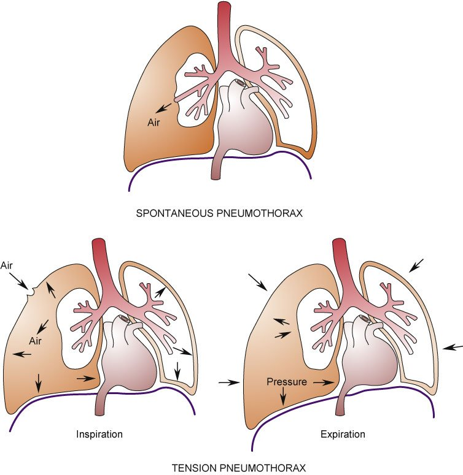
Pleural space: pleural effusion (slides 92–98)
Not a disease but a collection of fluid or pus from another process; the normal pleural space holds 5–15 mL of serous fluid, made by parietal pleural capillaries and reabsorbed by parietal lymphatics. It forms from (slide 93) raised hydrostatic pressure (heart failure, portal hypertension), lowered plasma oncotic pressure (severe hypoalbuminemia, nephrotic syndrome, cirrhosis), or lowered pleural pressure (lung collapse).
Said in the recording, not on a slide (no question uses it): an effusion develops when fluid entry increases, removal decreases, or both [part 2, 43:47].
| Transudate (slide 94) | Exudate (slide 95) | |
|---|---|---|
| Protein | Low: pleural/serum ratio < 0.5 | High: ratio > 0.5 |
| LDH (lactate dehydrogenase) | Pleural/serum ratio < 0.6 | Ratio > 0.6 |
| Specific gravity | < 1.016 (the lecturer called specific gravity an older approach, not the main basis of classification today) | — |
| Mechanism | Increased hydrostatic or decreased oncotic pressure | More fluid from increased pleural permeability (inflammation) or impaired lymphatic drainage |
| Associated with | Severe heart failure, cirrhosis with ascites, nephrotic syndrome, myxedema | Malignancy, infection, pulmonary embolism, sarcoidosis, post-myocardial infarction syndrome, pancreatic disease |
Exudate causes. Exudative pleural effusions are associated with malignancies, infections, pulmonary embolism, sarcoidosis, post-myocardial infarction syndrome and pancreatic disease.
What makes an effusion transudative. Transudates are caused by increased hydrostatic or decreased oncotic pressure, as in severe heart failure, cirrhosis with ascites, nephrotic syndrome and myxedema.
One positive criterion supports an exudate (Light’s criteria, as the lecturer named them; slide 98, worked through: a protein ratio of 0.42 is transudate-range, but an LDH ratio of 0.75 meets the exudate criterion, so the fluid is an exudate; pleural LDH above two-thirds of the serum upper limit of normal is the third criterion).
- Hemothorax: blood mixed with pleural fluid (slide 96).
- Chylothorax: a chylous exudate from leakage of chyle from the thoracic duct, after trauma or mediastinal malignancy such as lymphoma (slide 96).
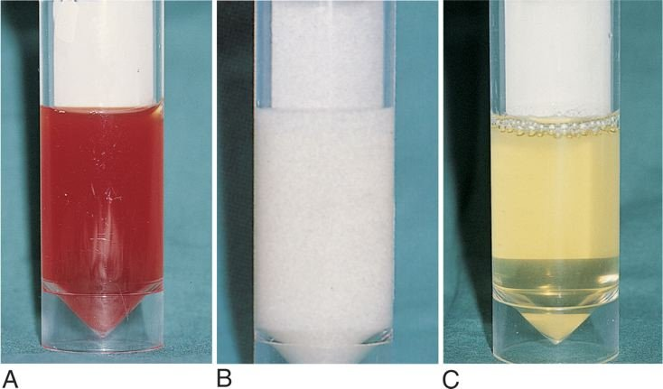
Obstructive sleep apnea-hypopnea syndrome (slides 99–103)
Listed under the neuromuscular, chest wall and obesity disorders. A chronic condition of cyclic upper-airway obstruction during sleep with symptoms or signs of disturbed sleep; at least 5 obstructive events per hour is the minimal criterion. The collapsible segments of the pharynx close completely or partly.
| Event | Airflow | Effort |
|---|---|---|
| Obstructive apnea | Absent for at least 10 seconds | Continues |
| Hypopnea | A discrete decrease (not cessation) for at least 10 seconds, with oxygen desaturation or an abrupt arousal | — |
| Central event (slide 103) | Absent | Absent |
Each obstruction combines progressive asphyxia (too little oxygen, too much carbon dioxide) with sudden autonomic and behavioral arousal, causing acute cardiac and cerebrovascular disturbances.
Said in the recording, not on a slide (no question uses it): the return of airflow can bring a burst of sympathetic activity, with abrupt changes in heart rate, vascular tone and blood pressure [part 2, 61:07].
Pneumonia (slides 105–109)
- An inflammatory reaction in the alveoli and interstitium caused by an infectious agent. Sources: aspiration of oropharyngeal secretions or gastric contents (gross aspiration delivers large numbers of anaerobic bacteria, a major factor in anaerobic infection and abscess); inhalation (virus, Mycoplasma); contamination from the systemic circulation (staphylococcal sepsis, right-sided endocarditis, intravenous drug use, gram-negative bacteremia).
- Normal defenses are immune responses, cough, sneezing and mucociliary clearance; community-acquired pneumonia occurs when they are compromised. Organisms multiply, alveolar spaces fill with exudate, and the exudate consolidates, becoming hard to expectorate.
- Community-acquired: a person living independently, or hospitalized for another reason for under 48 hours before respiratory symptoms; commonest typical pathogens S. pneumoniae, H. influenzae, Moraxella catarrhalis.
- Hospital-acquired (and ventilator-associated): early onset (first 4 hospital days) tends to be antibiotic-susceptible bacteria; late onset is more often multidrug-resistant, with greater morbidity and mortality; aerobic gram-negative bacilli (Pseudomonas aeruginosa, E. coli, K. pneumoniae, Acinetobacter), S. aureus, H. influenzae.
9.8 · Objective d.6 — Asthma
Asthma is the obstructive airway disease that is reversible, with airway inflammation and increased airway responsiveness to a variety of stimuli (slide 35). The lecturer’s caveat (section 9.0): many patients have a strong reversible component, but persistent inflammation and remodeling can leave limitation that is less completely reversible.
| Allergic (extrinsic) asthma (slide 39) | Non-allergic (intrinsic) asthma (slide 37) | |
|---|---|---|
| Trigger | Specific antigens | Exercise, stress, pulmonary irritants; aspirin and occupational allergens; no specific allergen identified |
| Mechanism | Immediate phase mediated by IgE: IgE on mast cells releases chemical mediators (histamine, leukotrienes — the slow-reacting substances of anaphylaxis — prostaglandins, bradykinins, eosinophilic chemotactic factor, serotonin) | Negative skin tests to common inhalant allergens, normal serum IgE |
| Course | — | Often develops in middle age; less favorable prognosis |
What sets asthma apart. Asthma is an obstructive airway disease whose obstruction is reversible, with airway inflammation and increased airway responsiveness to a variety of stimuli.
What happens to the airway (slides 40, 43): normal respiratory epithelium is denuded and replaced by goblet cells; microvascular permeability rises (mucosal edema, inflammatory exudate, bronchoconstriction); recruited leukocytes release more mediators that damage the epithelium; vagal stimulation adds mucus hypersecretion and bronchoconstriction. Immunohistopathology: denuded epithelium, collagen deposition beneath the basement membrane, edema, mast cell activation, infiltration by neutrophils, eosinophils and lymphocytes. The inflammation drives bronchospasm, mucosal edema, mucous plugs and airway wall remodeling.
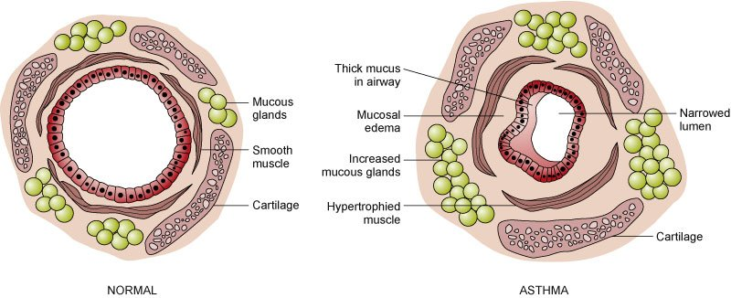
Over time (slide 44): symptoms fluctuate and testing may be normal between episodes; muscle contraction and inflammation change at different speeds, so early improvement may leave inflammation behind.
9.9 · Objective d.7 — Pulmonary edema
No section of the deck is given to pulmonary edema; the pieces are:
- The forces (slides 17–19, section 9.1): fluid leaves a capillary when hydrostatic pressure exceeds the osmotic pull; a rise in capillary hydrostatic pressure, or a fall in plasma oncotic pressure, increases filtration (the same two mechanisms make a transudative pleural effusion, slide 93).
- Leaky capillaries (slides 84–85): in acute respiratory distress syndrome the injured alveolar-capillary membrane floods the alveoli with protein-rich fluid, a noncardiogenic pulmonary edema; in acute lung injury, leaked water, cells and protein collapse alveoli (slide 11).
- Pulmonary edema is listed among the parenchymal causes of acute respiratory failure (slide 14).
9.10 · Objective d.8 — Pulmonary embolism
No section of the deck is given to pulmonary embolism; the slides use it as a cause in five places:
- Dead space (slide 10): embolism increases dead space (wasted ventilation), one route to hypercapnic ventilatory failure.
- Acute respiratory failure (slide 14): a parenchymal cause.
- Pulmonary hypertension (slide 22): obstruction from embolism increases resistance to blood flow.
- Acute respiratory distress syndrome (slide 83): embolism is among its causes.
- Pleural effusion (slide 95): pulmonary embolism is associated with an exudate.
9.11 · Objective d.9 — Cor pulmonale
Cor pulmonale is right ventricular dilation from lung disease (slide 50). The chain, from chronic bronchitis: hypoxia → pulmonary artery vasoconstriction → pulmonary hypertension → right ventricular dilation (cor pulmonale) → right-sided heart failure, whose edema is part of the “blue bloater” picture. The same hypoxic vasoconstriction in advanced emphysema is a route to pulmonary hypertension (slide 22), and the narrowed pulmonary arteries leave an enlarged right ventricle (slide 16).